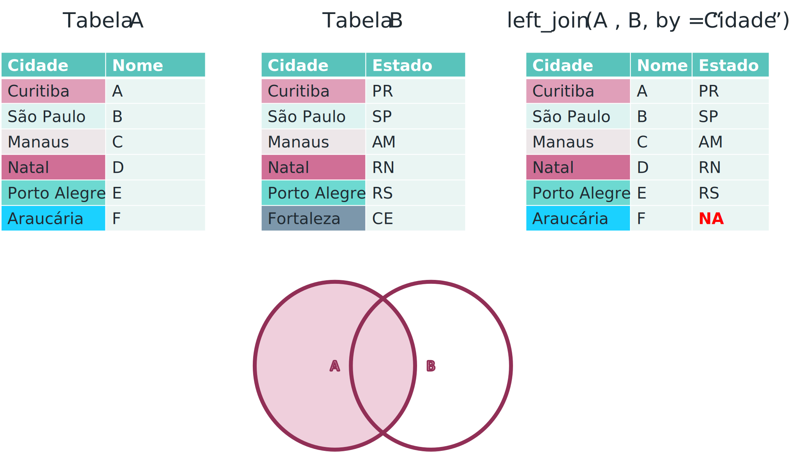
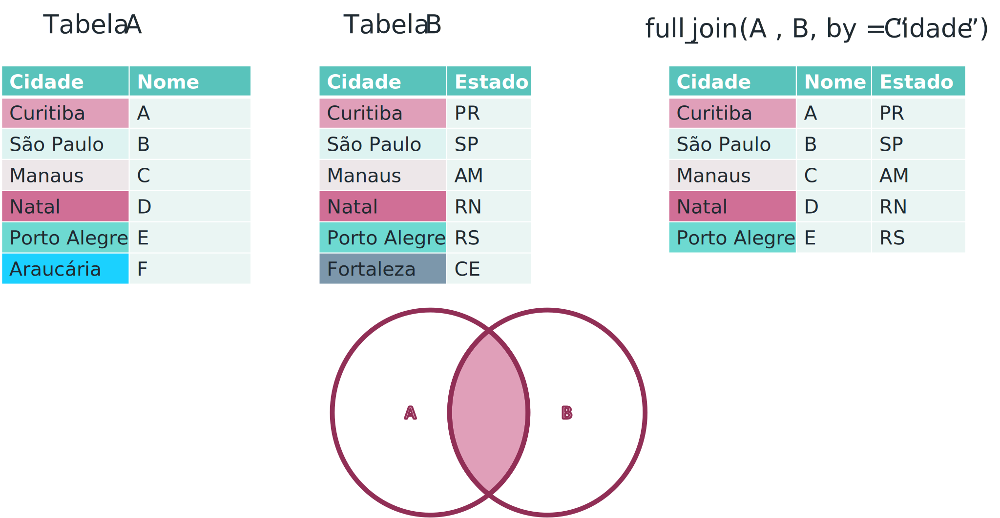
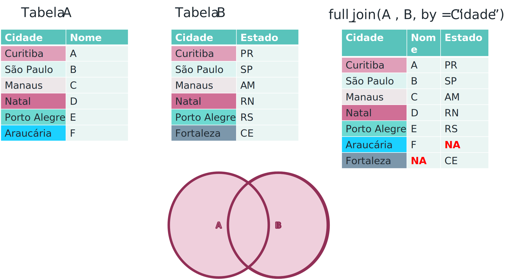
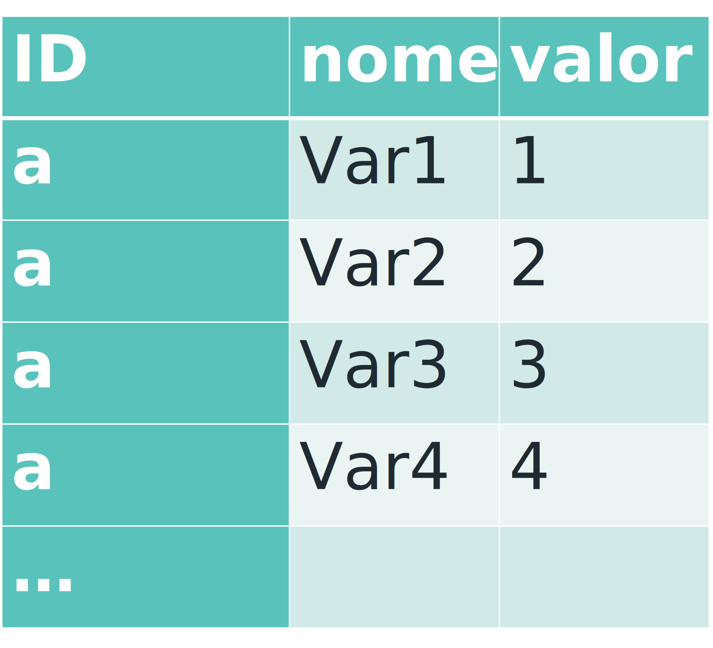

x <- c(-4:4)
x[1] -4 -3 -2 -1 0 1 2 3 4
Uma maneira de fazermos os códigos em R mais legíveis é através da utilização dos operadores pipe. Os pipes fazem com a sequência das análises se torne mais aparente, o que torna o código muito menos complexo e mais fácil de ser alterado.
Tomemos como exemplo a seguinte análise: Seja x um vetor com 9 elementos, queremos obter um vetor ordenado do cosseno desses valores. Para fazer isso em R podemos aninhar diversas funções.
x <- c(-4:4)
x[1] -4 -3 -2 -1 0 1 2 3 4[1] 1.0000000 0.5403023 0.5403023 -0.4161468 -0.4161468 -0.6536436 -0.6536436
[8] -0.9899925 -0.9899925O que torna o código pouco legível e difícil de ser interpretado.
Podemos identar o código para faciliar a leitura:
[1] 1.0000000 0.5403023 0.5403023 -0.4161468 -0.4161468 -0.6536436 -0.6536436
[8] -0.9899925 -0.9899925Contudo, ainda assim, o código não é de fácil compreensão, principalmente porque devemos ler o código de dentro para fora. Os pipes surgem como uma alternativa para solucionar esse problema, tornando os códigos mais legíveis e debugáveis. Os pipes, representados pelo operador %>%, são uma característica poderosa e conveniente introduzida pelo pacote magrittr e amplamente adotada em R para simplificar a manipulação de dados. Os pipes permitem encadear sequências de operações em uma maneira legível e intuitiva, tornando o código mais conciso e fácil de entender.
Funcionamento dos Pipes: O operador %>% permite que você passe o resultado de uma expressão como o primeiro argumento de outra expressão. Isso é particularmente útil ao realizar uma série de transformações em um objeto sem a necessidade de criar variáveis intermediárias. O mesmo código que vimos anteriormente, com a utilização de pipe ficaria:
[1] 1.0000000 0.5403023 0.5403023 -0.4161468 -0.4161468 -0.6536436 -0.6536436
[8] -0.9899925 -0.9899925x %>% f é equivalente à f(x)
x %>% f(y) é equivalente à f(x, y)
x %>% f %>% g %>% h é equivalente à h(g(f(x)))
O %>% significa que o elemento à esquerda sera avaliado pela função à direita.
Podemos também utilizar o . como espaço reservado para o elemento à esquerda, isto é:
x %>% f(y, .) é equivalente à f(y, x)
x %>% f(., y) é equivalente à f(x, y)
x %>% f(y, z = .) é equivalente à f(y, z = x).Note que não conseguimos utilizar o %>% com operadores aritiméticos. Portanto, uma alternativa é utiliarmos as funções add(), subtract(), multiply_by(), raise_to_power(), divide_by() etc. Para a lista completa de funções, utilize ?add.
[1] 2.197622 3.849113 12.793542 5.352542 5.646439 13.575325 7.304581
[8] -1.325306 1.565736 2.771690Outra opção é utilizarmos os a operação entre aspas.
Legibilidade: Os pipes permitem ler o código da esquerda para a direita, refletindo a sequência de operações realizadas.
Redução de Variáveis Intermediárias: Com pipes, não precisamos criar variáveis intermediárias para armazenar resultados parciais.
Encadeamento Simples: O encadeamento de operações se torna mais intuitivo e fácil de seguir o código e procedimentos.
Depuração: Ao usar pipes, podemos isolar cada etapa para depuração, facilitando a identificação de erros.
Muitas vezes queremos realizar opereções e atribuir os resultados ao mesmo data.frame de entrada, por exemplo, podemos querer criar uma nova variável em meu_data_frame, porem, não temos interesse em duplicar o banco de dados. Podemos fazer uma atribuição explicita ou implicita. Para a explicita, simplismente atribuímos utilizando = ou <-, como vimos até agora durante o curso. Porém, podemos fazer uma atribuição implicita utilizando o operador %<>%.
Carregando pacotes exigidos: dplyr
Attaching package: 'dplyr'The following objects are masked from 'package:stats':
filter, lagThe following objects are masked from 'package:base':
intersect, setdiff, setequal, union## Atribuição explicita
meu_data_frame <- data.frame(
nome = c("Alice", "Bob", "Carol", "Ana", "João", "Carlos", "Patrícia", "Leonardo"),
idade = c(25, 30, 28, 20, 27, 50, 60, 45),
salario = c(5000, 6000, 5500, 8000, 2000, 3500, 10000, 3800 ),
meio_de_transporte = c('onibus', 'bicicleta', 'onibus', 'carro', 'carro', 'onibus', 'onibus', 'bicicleta'))
meu_data_frame = meu_data_frame %>%
mutate(idade_25 = idade > 25)
glimpse(meu_data_frame)Rows: 8
Columns: 5
$ nome <chr> "Alice", "Bob", "Carol", "Ana", "João", "Carlos", "…
$ idade <dbl> 25, 30, 28, 20, 27, 50, 60, 45
$ salario <dbl> 5000, 6000, 5500, 8000, 2000, 3500, 10000, 3800
$ meio_de_transporte <chr> "onibus", "bicicleta", "onibus", "carro", "carro", …
$ idade_25 <lgl> FALSE, TRUE, TRUE, FALSE, TRUE, TRUE, TRUE, TRUERows: 8
Columns: 6
$ nome <chr> "Alice", "Bob", "Carol", "Ana", "João", "Carlos", "…
$ idade <dbl> 25, 30, 28, 20, 27, 50, 60, 45
$ salario <dbl> 5000, 6000, 5500, 8000, 2000, 3500, 10000, 3800
$ meio_de_transporte <chr> "onibus", "bicicleta", "onibus", "carro", "carro", …
$ idade_25 <lgl> FALSE, TRUE, TRUE, FALSE, TRUE, TRUE, TRUE, TRUE
$ idade_50 <lgl> FALSE, FALSE, FALSE, FALSE, FALSE, FALSE, TRUE, FAL…Carregando pacotes exigidos: data.table
Attaching package: 'data.table'The following objects are masked from 'package:dplyr':
between, first, lastCarregando pacotes exigidos: tidyr
Attaching package: 'tidyr'The following object is masked from 'package:magrittr':
extractcar_crash <- fread("./datasets/Brazil Total highway crashes 2010 - 2023.csv.gz")
# Dados extraídos de https://www.kaggle.com/datasets/liamarguedas/brazil-total-highway-crashes-2010-2023
glimpse(car_crash)Rows: 864,561
Columns: 24
$ data <chr> "01/01/2010", "01/01/2010", "01/01/2010…
$ horario <chr> "04:21:00", "02:13:00", "03:35:00", "07…
$ n_da_ocorrencia <chr> "18", "20", "000024/2010", "000038/2010…
$ tipo_de_ocorrencia <chr> "sem vítima", "sem vítima", "sem vítima…
$ km <chr> "167", "269,5", "77", "52", "33", "24",…
$ trecho <chr> "BR-393/RJ", "BR-116/PR", "BR-290/RS", …
$ sentido <chr> "Norte", "Sul", "Norte", "Norte", "Nort…
$ lugar_acidente <chr> "Rodovia do Aço", "Autopista Regis Bitt…
$ tipo_de_acidente <chr> "Derrapagem", "Colisão Traseira", "COLI…
$ automovel <int> 1, 2, 2, 0, 0, 1, 1, 1, 2, 1, NA, 1, 1,…
$ bicicleta <int> NA, NA, 0, 0, 0, 0, NA, NA, NA, NA, NA,…
$ caminhao <int> NA, NA, 0, 0, 0, 0, NA, NA, NA, NA, NA,…
$ moto <int> NA, NA, 0, 1, 1, 0, NA, NA, NA, NA, 1, …
$ onibus <int> NA, NA, 0, 0, 0, 0, NA, NA, NA, NA, NA,…
$ outros <int> NA, NA, 0, 0, 0, 0, NA, NA, NA, NA, NA,…
$ tracao_animal <int> NA, NA, 0, 0, 0, 0, NA, NA, NA, NA, NA,…
$ transporte_de_cargas_especiais <int> NA, NA, 0, 0, 0, 0, NA, NA, NA, NA, NA,…
$ trator_maquinas <int> NA, NA, 0, 0, 0, 0, NA, NA, NA, NA, NA,…
$ utilitarios <int> NA, NA, 0, 0, 0, 0, NA, NA, NA, NA, NA,…
$ ilesos <int> 1, 3, 2, 1, 1, 1, 3, 4, 4, 1, 0, 1, 1, …
$ levemente_feridos <int> 0, NA, 0, 0, 0, 0, NA, NA, 5, NA, 2, NA…
$ moderadamente_feridos <int> 0, NA, 0, 0, 0, 0, NA, NA, NA, NA, NA, …
$ gravemente_feridos <int> 0, NA, 0, 0, 0, 0, NA, NA, NA, NA, NA, …
$ mortos <int> 0, NA, 0, 0, 0, 0, NA, NA, NA, NA, NA, …No tidyverse, a função select() do pacote dplyr é amplamente utilizada para selecionar as colunas relevantes de um conjunto de dados. Além de selecionar colunas pelo nome, a função select() oferece diversas opções avançadas para facilitar a seleção e manipulação de colunas. Vamos explorar algumas dessas opções:
A forma mais simples de usar o select() é especificar os nomes das colunas que você deseja manter no resultado, por exemplo, podemos estar interessados em selecionarmos a data e o tipo_de_acidente.
data tipo_de_acidente
1: 01/01/2010 Derrapagem
2: 01/01/2010 Colisão Traseira
3: 01/01/2010 COLISÃO LATERAL
4: 01/01/2010 QUEDA DE MOTO
5: 01/01/2010 QUEDA DE MOTO
6: 01/01/2010 SAÍDA DE PISTAstarts_with(): Essa função permite selecionar colunas cujos nomes começam com um determinado padrão de caracteres. No nosso banco de dados, podemos estar interessados em selecionar todas as variáveis que iniciem com “tipo”.car_crash %>%
select(starts_with("tipo")) %>%
head() tipo_de_ocorrencia tipo_de_acidente
1: sem vítima Derrapagem
2: sem vítima Colisão Traseira
3: sem vítima COLISÃO LATERAL
4: sem vítima QUEDA DE MOTO
5: sem vítima QUEDA DE MOTO
6: sem vítima SAÍDA DE PISTAends_with(): Essa função permite selecionar colunas cujos nomes terminam com um determinado padrão de caracteres. No nosso banco de dados, podemos estar interessados em selecionar todas as variáveis que terminem com “feridos”. levemente_feridos moderadamente_feridos gravemente_feridos
1: 0 0 0
2: NA NA NA
3: 0 0 0
4: 0 0 0
5: 0 0 0
6: 0 0 0contains(): Essa função permite selecionar colunas cujos nomes contenham um determinado padrão de caracteres. No nosso banco de dados, podemos estar interessados em selecionar todas as variáveis que contenham “mente”.Muitas vezes, estamos interessados em selecionar apenas variáveis de um tipo, para tratarmos os dados da maneira mais adequada.
is.numeric()
Rows: 864,561
Columns: 15
$ automovel <int> 1, 2, 2, 0, 0, 1, 1, 1, 2, 1, NA, 1, 1,…
$ bicicleta <int> NA, NA, 0, 0, 0, 0, NA, NA, NA, NA, NA,…
$ caminhao <int> NA, NA, 0, 0, 0, 0, NA, NA, NA, NA, NA,…
$ moto <int> NA, NA, 0, 1, 1, 0, NA, NA, NA, NA, 1, …
$ onibus <int> NA, NA, 0, 0, 0, 0, NA, NA, NA, NA, NA,…
$ outros <int> NA, NA, 0, 0, 0, 0, NA, NA, NA, NA, NA,…
$ tracao_animal <int> NA, NA, 0, 0, 0, 0, NA, NA, NA, NA, NA,…
$ transporte_de_cargas_especiais <int> NA, NA, 0, 0, 0, 0, NA, NA, NA, NA, NA,…
$ trator_maquinas <int> NA, NA, 0, 0, 0, 0, NA, NA, NA, NA, NA,…
$ utilitarios <int> NA, NA, 0, 0, 0, 0, NA, NA, NA, NA, NA,…
$ ilesos <int> 1, 3, 2, 1, 1, 1, 3, 4, 4, 1, 0, 1, 1, …
$ levemente_feridos <int> 0, NA, 0, 0, 0, 0, NA, NA, 5, NA, 2, NA…
$ moderadamente_feridos <int> 0, NA, 0, 0, 0, 0, NA, NA, NA, NA, NA, …
$ gravemente_feridos <int> 0, NA, 0, 0, 0, 0, NA, NA, NA, NA, NA, …
$ mortos <int> 0, NA, 0, 0, 0, 0, NA, NA, NA, NA, NA, …is.character()
Rows: 864,561
Columns: 9
$ data <chr> "01/01/2010", "01/01/2010", "01/01/2010", "01/01/20…
$ horario <chr> "04:21:00", "02:13:00", "03:35:00", "07:31:00", "04…
$ n_da_ocorrencia <chr> "18", "20", "000024/2010", "000038/2010", "000027/2…
$ tipo_de_ocorrencia <chr> "sem vítima", "sem vítima", "sem vítima", "sem víti…
$ km <chr> "167", "269,5", "77", "52", "33", "24", "52", "40",…
$ trecho <chr> "BR-393/RJ", "BR-116/PR", "BR-290/RS", "BR-116/RS",…
$ sentido <chr> "Norte", "Sul", "Norte", "Norte", "Norte", "Sul", "…
$ lugar_acidente <chr> "Rodovia do Aço", "Autopista Regis Bittencourt", "C…
$ tipo_de_acidente <chr> "Derrapagem", "Colisão Traseira", "COLISÃO LATERAL"…is.logical()
all_of(), any_of(): Permitem usar variáveis definidas externamente como argumentos da função. Note que quando utilizamos all_of() todas as variáveis devem existir, já any_of() permite que nem todas as variáveis existam no banco de dados.vars_interesse = c("automovel", "bicicleta", "onibus")
car_crash %>%
select(all_of(vars_interesse)) %>%
glimpse()Rows: 864,561
Columns: 3
$ automovel <int> 1, 2, 2, 0, 0, 1, 1, 1, 2, 1, NA, 1, 1, 2, 2, 1, 1, NA, 1, 2…
$ bicicleta <int> NA, NA, 0, 0, 0, 0, NA, NA, NA, NA, NA, NA, 0, NA, NA, NA, N…
$ onibus <int> NA, NA, 0, 0, 0, 0, NA, NA, NA, NA, NA, NA, 0, NA, NA, NA, N…vars_interesse2 = c("automovel", "bicicleta", "onibus", "trator")
car_crash %>%
select(any_of(vars_interesse2)) %>%
glimpse()Rows: 864,561
Columns: 3
$ automovel <int> 1, 2, 2, 0, 0, 1, 1, 1, 2, 1, NA, 1, 1, 2, 2, 1, 1, NA, 1, 2…
$ bicicleta <int> NA, NA, 0, 0, 0, 0, NA, NA, NA, NA, NA, NA, 0, NA, NA, NA, N…
$ onibus <int> NA, NA, 0, 0, 0, 0, NA, NA, NA, NA, NA, NA, 0, NA, NA, NA, N…No pacote dplyr do tidyverse, a função filter() é amplamente utilizada para filtrar linhas de um conjunto de dados com base em condições específicas. Ela oferece diversas opções para criar filtros complexos que atendam às suas necessidades de análise. Vamos explorar diferentes tipos de filtros e como utilizá-los de maneira eficaz.
Filtros simples envolvem comparações entre valores de uma coluna e um valor constante. Alguns operadores de comparação comuns incluem:
==: Igual a
!=: Diferente de
<: Menor que
>: Maior que
<=: Menor ou igual a
>=: Maior ou igual a
Podemos estar interessados em filtrar as observações com pelo menos três carros envolvidos no acidente:
data horario n_da_ocorrencia tipo_de_ocorrencia km
1: 01/01/2010 13:14:00 150 sem vítima 560
2: 01/01/2011 23:21:00 542 sem vítima 137,5
3: 01/01/2011 12:21:00 212 sem vítima 68,8
4: 01/01/2011 13:55:00 135 sem vítima 269
5: 01/01/2011 14:57:00 309 sem vítima 193
---
34384: 31/12/2021 07:00:03 115 Sem vítima 626,434
34385: 31/12/2021 21:43:00 388 Sem vítima 131,806
34386: 31/12/2021 17:36:28 247 Sem vítima 269,670
34387: 31/12/2022 19:53:19 571 ac02 - Acidente com Vítima 445,000
34388: 31/12/2022 10:18:00 206 Acidente com vítima 44
trecho sentido lugar_acidente
1: BR-116/PR Sul Autopista Regis Bittencourt
2: BR-101/SC Norte Autopista Litoral Sul
3: BR-116/SP Pista Sul Novadutra
4: BR-116/PR Norte Autopista Regis Bittencourt
5: BR-101/SC Norte Autopista Litoral Sul
---
34384: BR-376/SC Decrescente Autopista Litoral Sul
34385: BR-101/SC Decrescente Autopista Litoral Sul
34386: BR-116/SP Crescente Autopista Regis Bittencourt
34387: BR-262/MG Oeste Concebra
34388: BR-101/SP Pista Norte RIOSP
tipo_de_acidente automovel bicicleta caminhao moto onibus
1: Colisão Traseira 3 NA NA NA NA
2: Colisão Traseira 3 NA NA NA NA
3: Choque em barreira New Jersey 3 0 0 0 0
4: Engavetamento 4 NA NA NA NA
5: Colisão Traseira 3 NA NA NA NA
---
34384: Engavetamento 3 0 0 0 0
34385: Engavetamento 3 0 0 0 0
34386: Engavetamento 3 0 0 0 0
34387: Colisão Lateral 3 0 0 0 0
34388: Engavetamento 3 0 0 0 0
outros tracao_animal transporte_de_cargas_especiais trator_maquinas
1: NA NA NA NA
2: NA NA NA NA
3: 0 0 NA 0
4: NA NA NA NA
5: NA NA NA NA
---
34384: 0 0 0 0
34385: 0 0 0 0
34386: 0 0 0 0
34387: 0 0 0 0
34388: 0 0 NA 0
utilitarios ilesos levemente_feridos moderadamente_feridos
1: NA 14 NA NA
2: NA 3 NA NA
3: 0 11 0 0
4: NA 7 NA NA
5: NA 3 NA NA
---
34384: 0 3 0 0
34385: 0 3 0 0
34386: 1 4 0 0
34387: 0 2 0 0
34388: 0 10 1 0
gravemente_feridos mortos
1: NA NA
2: NA NA
3: 0 0
4: NA NA
5: NA NA
---
34384: 0 0
34385: 0 0
34386: 0 0
34387: 0 0
34388: 0 0Você pode combinar filtros usando os operadores lógicos & (AND) e | (OR) para criar condições mais complexas.
Podemos estar interessados em filtrar as observações com pelo menos três carros e dois caminhões envolvidos no acidente:
data horario n_da_ocorrencia tipo_de_ocorrencia km
1: 01/02/2018 07:45:00 119 sem vítima 41,941
2: 01/03/2012 09:04:00 163 com vítima 111,19999694824219
3: 01/03/2019 00:07:00 2 sem vítima 667,5
4: 01/04/2011 08:32:00 223 sem vítima 222,7
5: 01/06/2014 16:47:00 238 com vítima 676,662
---
173: 29/11/2017 16:38:00 592 com vítima 96,30000305175781
174: 30/10/2012 13:15:00 437 com vítima 133,2
175: 31/03/2013 19:30:00 468 com vítima 540,5
176: 31/03/2014 15:56:00 228 sem vítima 656
177: 31/10/2011 06:28:00 121 com vítima 208
trecho sentido lugar_acidente tipo_de_acidente automovel
1: BR-101/SC Norte Autopista Litoral Sul Engavetamento 3
2: BR-116/PR Sul Autopista Litoral Sul Colisão Traseira 3
3: BR-376/PR Sul Autopista Litoral Sul Engavetamento 8
4: BR-116/RJ Pista Norte Novadutra Engavetamento 3
5: BR-376/PR Sul Autopista Litoral Sul Engavetamento 4
---
173: BR-116/SP Pista Norte Novadutra Engavetamento 7
174: BR-116/SP Pista Norte Novadutra Engavetamento 3
175: BR-381/MG Norte Autopista Fernão Dias Engavetamento 5
176: BR-376/PR Norte Autopista Litoral Sul Engavetamento 3
177: BR-116/RJ Pista Norte Novadutra Engavetamento 3
bicicleta caminhao moto onibus outros tracao_animal
1: NA 3 NA NA NA NA
2: NA 3 1 NA NA NA
3: NA 4 NA NA NA NA
4: 0 3 0 0 0 0
5: NA 4 NA NA NA NA
---
173: NA 3 NA NA NA NA
174: 0 3 0 0 0 0
175: NA 3 NA NA NA NA
176: NA 4 NA NA NA NA
177: 0 3 0 0 1 0
transporte_de_cargas_especiais trator_maquinas utilitarios ilesos
1: NA NA 1 7
2: NA NA NA 6
3: NA NA NA 29
4: NA 0 0 8
5: NA NA NA 3
---
173: NA NA NA 19
174: NA 0 0 8
175: NA NA NA 7
176: NA NA 2 9
177: NA 0 0 6
levemente_feridos moderadamente_feridos gravemente_feridos mortos
1: NA NA NA NA
2: 1 NA NA NA
3: NA NA NA NA
4: 0 0 0 0
5: NA 2 3 5
---
173: 1 NA NA NA
174: 1 0 0 0
175: 1 NA NA NA
176: NA NA NA NA
177: 1 0 0 0Podemos omitir o operador lógico &, então a função ficaria:
data horario n_da_ocorrencia tipo_de_ocorrencia km
1: 01/02/2018 07:45:00 119 sem vítima 41,941
2: 01/03/2012 09:04:00 163 com vítima 111,19999694824219
3: 01/03/2019 00:07:00 2 sem vítima 667,5
4: 01/04/2011 08:32:00 223 sem vítima 222,7
5: 01/06/2014 16:47:00 238 com vítima 676,662
---
173: 29/11/2017 16:38:00 592 com vítima 96,30000305175781
174: 30/10/2012 13:15:00 437 com vítima 133,2
175: 31/03/2013 19:30:00 468 com vítima 540,5
176: 31/03/2014 15:56:00 228 sem vítima 656
177: 31/10/2011 06:28:00 121 com vítima 208
trecho sentido lugar_acidente tipo_de_acidente automovel
1: BR-101/SC Norte Autopista Litoral Sul Engavetamento 3
2: BR-116/PR Sul Autopista Litoral Sul Colisão Traseira 3
3: BR-376/PR Sul Autopista Litoral Sul Engavetamento 8
4: BR-116/RJ Pista Norte Novadutra Engavetamento 3
5: BR-376/PR Sul Autopista Litoral Sul Engavetamento 4
---
173: BR-116/SP Pista Norte Novadutra Engavetamento 7
174: BR-116/SP Pista Norte Novadutra Engavetamento 3
175: BR-381/MG Norte Autopista Fernão Dias Engavetamento 5
176: BR-376/PR Norte Autopista Litoral Sul Engavetamento 3
177: BR-116/RJ Pista Norte Novadutra Engavetamento 3
bicicleta caminhao moto onibus outros tracao_animal
1: NA 3 NA NA NA NA
2: NA 3 1 NA NA NA
3: NA 4 NA NA NA NA
4: 0 3 0 0 0 0
5: NA 4 NA NA NA NA
---
173: NA 3 NA NA NA NA
174: 0 3 0 0 0 0
175: NA 3 NA NA NA NA
176: NA 4 NA NA NA NA
177: 0 3 0 0 1 0
transporte_de_cargas_especiais trator_maquinas utilitarios ilesos
1: NA NA 1 7
2: NA NA NA 6
3: NA NA NA 29
4: NA 0 0 8
5: NA NA NA 3
---
173: NA NA NA 19
174: NA 0 0 8
175: NA NA NA 7
176: NA NA 2 9
177: NA 0 0 6
levemente_feridos moderadamente_feridos gravemente_feridos mortos
1: NA NA NA NA
2: 1 NA NA NA
3: NA NA NA NA
4: 0 0 0 0
5: NA 2 3 5
---
173: 1 NA NA NA
174: 1 0 0 0
175: 1 NA NA NA
176: NA NA NA NA
177: 1 0 0 0Podemos estar interessados em filtrar as observações com pelo menos três carros OU dois caminhões envolvidos no acidente:
data horario n_da_ocorrencia tipo_de_ocorrencia km
1: 01/01/2010 13:14:00 150 sem vítima 560
2: 01/01/2011 23:21:00 542 sem vítima 137,5
3: 01/01/2011 12:21:00 212 sem vítima 68,8
4: 01/01/2011 13:55:00 135 sem vítima 269
5: 01/01/2011 14:57:00 309 sem vítima 193
---
39204: 31/12/2021 21:43:00 388 Sem vítima 131,806
39205: 31/12/2021 17:36:28 247 Sem vítima 269,670
39206: 31/12/2022 19:53:19 571 ac02 - Acidente com Vítima 445,000
39207: 31/12/2022 16:29:00 343 Sem vítima 643,000
39208: 31/12/2022 10:18:00 206 Acidente com vítima 44
trecho sentido lugar_acidente
1: BR-116/PR Sul Autopista Regis Bittencourt
2: BR-101/SC Norte Autopista Litoral Sul
3: BR-116/SP Pista Sul Novadutra
4: BR-116/PR Norte Autopista Regis Bittencourt
5: BR-101/SC Norte Autopista Litoral Sul
---
39204: BR-101/SC Decrescente Autopista Litoral Sul
39205: BR-116/SP Crescente Autopista Regis Bittencourt
39206: BR-262/MG Oeste Concebra
39207: BR-116/BA Decrescente Via Bahia
39208: BR-101/SP Pista Norte RIOSP
tipo_de_acidente automovel bicicleta caminhao moto
1: Colisão Traseira 3 NA NA NA
2: Colisão Traseira 3 NA NA NA
3: Choque em barreira New Jersey 3 0 0 0
4: Engavetamento 4 NA NA NA
5: Colisão Traseira 3 NA NA NA
---
39204: Engavetamento 3 0 0 0
39205: Engavetamento 3 0 0 0
39206: Colisão Lateral 3 0 0 0
39207: Colisão lateral no mesmo sentido 0 0 3 0
39208: Engavetamento 3 0 0 0
onibus outros tracao_animal transporte_de_cargas_especiais
1: NA NA NA NA
2: NA NA NA NA
3: 0 0 0 NA
4: NA NA NA NA
5: NA NA NA NA
---
39204: 0 0 0 0
39205: 0 0 0 0
39206: 0 0 0 0
39207: 0 0 0 0
39208: 0 0 0 NA
trator_maquinas utilitarios ilesos levemente_feridos
1: NA NA 14 NA
2: NA NA 3 NA
3: 0 0 11 0
4: NA NA 7 NA
5: NA NA 3 NA
---
39204: 0 0 3 0
39205: 0 1 4 0
39206: 0 0 2 0
39207: 0 0 0 0
39208: 0 0 10 1
moderadamente_feridos gravemente_feridos mortos
1: NA NA NA
2: NA NA NA
3: 0 0 0
4: NA NA NA
5: NA NA NA
---
39204: 0 0 0
39205: 0 0 0
39206: 0 0 0
39207: 0 0 0
39208: 0 0 0Para filtramos valores dentro de um intervalo definido podemos utilizar as funções between() e %in%.
A função between() é útil para filtrar valores dentro de um intervalo numérico.
Podemos estar interessados em filtrar as observações com valores entre 4 e 8 motos envolvidas no acidente:
dados_filtrados <- car_crash %>%
filter(between(moto, lower = 4, upper = 8, incbounds = TRUE))
dados_filtrados data horario n_da_ocorrencia tipo_de_ocorrencia
1: 02/02/2012 09:07:00 35 sem vítima
2: 02/08/2022 14:34:00 333 Acidente com Danos Materiais
3: 04/02/2021 06:24:00 111 Acidente sem Vítimas
4: 05/08/2021 07:12:00 118 Acidente com Vítimas
5: 07/08/2021 04:53:00 35 Acidente com Vítimas
6: 09/07/2021 06:08:00 70 Acidente com Vítimas
7: 11/04/2019 23:50:00 526 com vítima
8: 11/07/2017 16:31:00 307 com vítima
9: 13/11/2016 17:15:00 146 sem vítima
10: 14/01/2021 06:55:00 143 Acidente com Vítimas
11: 16/11/2010 21:22:00 404 com vítima
12: 17/03/2016 06:52:00 64 Acidente com vítima
13: 18/03/2016 17:02:00 259 Acidente sem Vítima
14: 18/07/2021 09:06:00 88 Acidente sem Vítimas
15: 19/03/2016 05:23:00 70 Acidente sem Vítima - TRECHO CONTORNO
16: 19/10/2020 18:40:00 240 Acidente Fatal
17: 20/03/2016 18:20:00 249 Acidente com vítima
18: 20/03/2021 22:17:00 245 Acidente com Vítimas
19: 20/03/2021 13:57:00 140 Acidente Fatal
20: 20/05/2016 07:50:00 110 com vítima
21: 20/10/2021 06:30:00 114 Acidente com Vítimas
22: 21/03/2016 08:54:00 103 Acidente com vítima
23: 22/01/2023 19:40:00 3192 AC01 - Acidente com VITIMA FATAL
24: 22/03/2016 23:01:00 347 Acidente sem Vítima
25: 22/11/2015 10:04:00 61 com vítima
26: 23/01/2023 14:50:00 69 Com vítima
27: 25/03/2013 07:31:00 158 com vítima
28: 25/09/2021 06:50:00 66 Acidente com Vítimas
29: 26/08/2011 22:27:00 817 com vítima
30: 27/10/2021 12:33:00 208 Acidente com Vítimas
31: 28/03/2020 12:30:00 249 com vítima
32: 29/03/2021 23:48:00 289 Acidente com Vítimas
data horario n_da_ocorrencia tipo_de_ocorrencia
km trecho sentido lugar_acidente
1: 59,7 BR-153/SP Norte Transbrasiliana
2: 506,000 BR-153/GO Sul Concebra
3: 510,3 BR-040/MG Sul VIA040
4: 96,99 BR-040/GO Sul VIA040
5: 552,15 BR-040/MG Sul VIA040
6: 514,4 BR-040/MG Sul VIA040
7: 212,269 BR-101/SC Sul Autopista Litoral Sul
8: 269,5 BR-116/PR Sul Autopista Regis Bittencourt
9: 0,2 BR-050/MG Norte ECO050
10: 542,25 BR-040/MG Sul VIA040
11: 90,0999984741211 BR-381/SP Norte Autopista Fernão Dias
12: 401 BR-101/ES Sul ECO101
13: 205 BR-101/ES Norte ECO101
14: 4,1 BR-040/GO Norte VIA040
15: 285 BR-101/ES Sul ECO101
16: 610,55 BR-040/MG Sul VIA040
17: 139 BR-101/ES Sul ECO101
18: 23,1 BR-040/GO Norte VIA040
19: 34,6 BR-040/MG Sul VIA040
20: 207,488 BR-101/SC Norte Autopista Litoral Sul
21: 517,5 BR-040/MG Sul VIA040
22: 363 BR-101/ES Sul ECO101
23: 822 BR-040/MG JF Concer
24: 10 BR-101/ES Norte ECO101
25: 277,7 BR-101/RJ Sul Autopista Fluminense
26: 80,200 BR-392/RS Crescente Ecosul
27: 180,2 BR-116/RJ Pista Norte Novadutra
28: 5,5 BR-040/DF Norte VIA040
29: 153,4 BR-116/SP Pista Norte Novadutra
30: 531,12 BR-040/MG Sul VIA040
31: 24,926 BR-101/SC Sul Autopista Litoral Sul
32: 8,9 BR-040/MG Sul VIA040
km trecho sentido lugar_acidente
tipo_de_acidente automovel bicicleta caminhao
1: Choque contra objeto na faixa de rolamento NA NA 1
2: Colisão Traseira 0 0 0
3: Engavetamento 0 0 0
4: Colisão traseira 0 0 0
5: Colisão traseira 0 0 0
6: Engavetamento 4 0 0
7: Engavetamento 1 NA NA
8: Colisão Transversal 1 0 0
9: Choque - Veiculo parado no acostamento 1 NA NA
10: Colisão traseira 0 0 0
11: Outros - Sequência NA NA NA
12: Colisão Lateral 1 NA 0
13: Colisão Traseira 2 NA 0
14: Colisão lateral 0 0 0
15: Saída de Pista 2 NA 0
16: Colisão transversal 0 0 1
17: Colisão Traseira 1 NA 0
18: Engavetamento 1 0 0
19: Colisão frontal 0 0 1
20: Engavetamento NA NA NA
21: Colisão lateral 2 0 0
22: Colisão Lateral 0 NA 1
23: Atropelamento - Animal NA NA NA
24: Veículo em Chamas 0 NA 0
25: Engavetamento 1 NA NA
26: Saída de pista 0 0 0
27: Abalroamento longitudinal 1 0 0
28: Tombamento de Moto 0 0 0
29: Queda de moto 0 0 0
30: Colisão lateral 0 0 0
31: Engavetamento 1 NA NA
32: Colisão traseira 2 0 0
tipo_de_acidente automovel bicicleta caminhao
moto onibus outros tracao_animal transporte_de_cargas_especiais
1: 4 NA NA NA NA
2: 4 0 0 0 0
3: 5 0 1 0 0
4: 4 0 0 0 0
5: 4 0 1 0 0
6: 4 0 0 0 0
7: 4 NA NA NA NA
8: 4 0 0 0 0
9: 4 NA NA NA NA
10: 4 0 0 0 0
11: 4 NA NA NA NA
12: 5 0 0 0 NA
13: 4 0 0 0 NA
14: 5 0 0 0 0
15: 4 0 0 0 NA
16: 6 0 0 0 0
17: 4 0 0 0 NA
18: 4 0 0 0 0
19: 4 2 0 0 0
20: 4 NA 1 NA NA
21: 4 0 0 0 0
22: 4 0 0 0 NA
23: 4 NA NA NA NA
24: 4 0 0 0 NA
25: 5 NA NA NA NA
26: 5 0 0 0 0
27: 4 0 0 0 NA
28: 4 0 1 0 0
29: 4 0 0 0 NA
30: 4 0 0 0 0
31: 4 NA NA NA NA
32: 4 0 0 0 0
moto onibus outros tracao_animal transporte_de_cargas_especiais
trator_maquinas utilitarios ilesos levemente_feridos moderadamente_feridos
1: NA NA 5 NA NA
2: 0 0 4 0 0
3: 0 0 3 0 0
4: 0 0 1 0 1
5: 0 0 0 0 0
6: 0 0 0 1 0
7: NA NA 1 2 NA
8: 0 0 1 4 0
9: NA NA 6 NA NA
10: 0 0 2 1 0
11: NA NA 4 1 NA
12: NA NA 2 0 0
13: NA NA 5 0 0
14: 0 0 2 0 0
15: NA NA 4 0 0
16: 0 0 1 0 0
17: NA NA 2 2 0
18: 0 0 2 0 0
19: 0 0 1 0 0
20: NA NA 3 2 NA
21: 0 0 0 1 0
22: NA NA 2 1 0
23: NA NA 1 2 NA
24: NA NA 1 0 0
25: NA NA 4 1 2
26: 0 0 3 1 0
27: 0 0 2 4 0
28: 0 0 3 0 1
29: 0 0 2 2 0
30: 0 0 0 1 0
31: NA NA 3 2 NA
32: 0 0 1 1 0
trator_maquinas utilitarios ilesos levemente_feridos moderadamente_feridos
gravemente_feridos mortos
1: NA NA
2: 0 0
3: 0 0
4: 0 0
5: 0 0
6: 0 0
7: 1 1
8: 0 0
9: NA NA
10: 0 0
11: NA NA
12: 1 0
13: 0 0
14: 0 0
15: 0 0
16: 0 1
17: 0 0
18: 0 0
19: 0 1
20: NA NA
21: 0 0
22: 0 0
23: 1 1
24: 0 0
25: NA NA
26: 1 0
27: 0 0
28: 0 0
29: 0 0
30: 0 0
31: NA NA
32: 0 0
gravemente_feridos mortosA função %in% é usada para filtrar valores que correspondem a um conjunto de valores.
Podemos estar interessados em filtrar as observações com ocorrência em alguma das seguintes operadoras: “Autopista Regis Bittencourt”, “Autopista Litoral Sul”, “Via Sul”.
autopistas = c("Autopista Regis Bittencourt", "Autopista Litoral Sul", "Via Sul")
dados_filtrados <- car_crash %>%
filter(lugar_acidente %in% autopistas)
dados_filtrados data horario n_da_ocorrencia tipo_de_ocorrencia km
1: 01/01/2010 02:13:00 20 sem vítima 269,5
2: 01/01/2010 11:20:00 125 sem vítima 52
3: 01/01/2010 18:07:00 214 sem vítima 40
4: 01/01/2010 15:52:00 354 sem vítima 132
5: 01/01/2010 16:30:00 377 com vítima 35
---
203032: 31/12/2022 20:44:02 343 Com vítima 105,500
203033: 31/12/2022 22:20:07 372 Sem vítima 158,100
203034: 31/12/2022 22:16:59 369 Com vítima 131,163
203035: 31/12/2022 23:23:36 386 Sem vítima 146,425
203036: 31/12/2022 12:12:09 188 Com vítima 223,520
trecho sentido lugar_acidente tipo_de_acidente
1: BR-116/PR Sul Autopista Regis Bittencourt Colisão Traseira
2: BR-116/PR Norte Autopista Regis Bittencourt Saida de Pista
3: BR-116/PR Sul Autopista Regis Bittencourt Saida de Pista
4: BR-101/SC Sul Autopista Litoral Sul Saida de Pista
5: BR-101/SC Sul Autopista Litoral Sul Queda de Moto
---
203032: BR-116/SC Crescente Autopista Litoral Sul Colisão traseira
203033: BR-101/SC Crescente Autopista Litoral Sul Colisão traseira
203034: BR-101/SC Crescente Autopista Litoral Sul Queda de moto
203035: BR-101/SC Crescente Autopista Litoral Sul Choque
203036: BR-101/SC Decrescente Autopista Litoral Sul Queda de moto
automovel bicicleta caminhao moto onibus outros tracao_animal
1: 2 NA NA NA NA NA NA
2: 1 NA NA NA NA NA NA
3: 1 NA NA NA NA NA NA
4: 1 NA NA NA NA NA NA
5: NA NA NA 1 NA NA NA
---
203032: 1 0 0 1 0 0 0
203033: 2 0 0 0 0 0 0
203034: 0 0 0 1 0 0 0
203035: 1 0 0 0 0 0 0
203036: 0 0 0 1 0 0 0
transporte_de_cargas_especiais trator_maquinas utilitarios ilesos
1: NA NA NA 3
2: NA NA NA 3
3: NA NA NA 4
4: NA NA NA 1
5: NA NA NA 0
---
203032: 0 0 0 1
203033: 0 0 0 2
203034: 0 0 0 0
203035: 0 0 0 0
203036: 0 0 0 0
levemente_feridos moderadamente_feridos gravemente_feridos mortos
1: NA NA NA NA
2: NA NA NA NA
3: NA NA NA NA
4: NA NA NA NA
5: 2 NA NA NA
---
203032: 1 0 0 0
203033: 0 0 0 0
203034: 1 0 0 0
203035: 0 0 0 0
203036: 2 0 0 0Podemos estar interessados nas autopistas que não são operadas pelas mesmas operadoras. Para isso precisamos definir um operador de not in.
`%ni%` <- Negate(`%in%`)
dados_filtrados <- car_crash %>%
filter(lugar_acidente %ni% autopistas)
dados_filtrados data horario n_da_ocorrencia tipo_de_ocorrencia
1: 01/01/2010 04:21:00 18 sem vítima
2: 01/01/2010 03:35:00 000024/2010 sem vítima
3: 01/01/2010 07:31:00 000038/2010 sem vítima
4: 01/01/2010 04:57:00 000027/2010 sem vítima
5: 01/01/2010 08:02:00 000042/2010 sem vítima
---
661521: 31/12/2022 02:10:00 17 Acidente com Danos Materiais
661522: 31/12/2022 00:08:00 4 Acidente com Danos Materiais
661523: 31/12/2022 03:28:00 21 Com vítima
661524: 31/12/2022 05:05:55 14 Sem vítima
661525: 31/12/2022 13:49:33 339 Acidente com Danos Materiais
km trecho sentido lugar_acidente tipo_de_acidente
1: 167 BR-393/RJ Norte Rodovia do Aço Derrapagem
2: 77 BR-290/RS Norte Concepa COLISÃO LATERAL
3: 52 BR-116/RS Norte Concepa QUEDA DE MOTO
4: 33 BR-290/RS Norte Concepa QUEDA DE MOTO
5: 24 BR-290/RS Sul Concepa SAÍDA DE PISTA
---
661521: 636,000 BR-262/MG Leste Concebra Saida de Pista
661522: 865,000 BR-262/MG Oeste Concebra Saida de Pista
661523: 180,000 BR-50/MG Decrescente ECO050 Capotamento
661524: 115,100 BR-116/PR Decrescente Autopista Planalto Sul Colisão traseira
661525: 379,000 BR-262/MG Leste Concebra Saida de Pista
automovel bicicleta caminhao moto onibus outros tracao_animal
1: 1 NA NA NA NA NA NA
2: 2 0 0 0 0 0 0
3: 0 0 0 1 0 0 0
4: 0 0 0 1 0 0 0
5: 1 0 0 0 0 0 0
---
661521: 1 0 0 0 0 0 0
661522: 1 0 0 0 0 0 0
661523: 1 0 0 0 0 0 0
661524: 2 0 0 0 0 0 0
661525: 0 0 1 0 0 0 0
transporte_de_cargas_especiais trator_maquinas utilitarios ilesos
1: NA NA NA 1
2: 0 0 0 2
3: 0 0 0 1
4: 0 0 0 1
5: 0 0 0 1
---
661521: 0 0 0 3
661522: 0 0 0 1
661523: 0 0 0 3
661524: 0 0 0 2
661525: 0 0 0 1
levemente_feridos moderadamente_feridos gravemente_feridos mortos
1: 0 0 0 0
2: 0 0 0 0
3: 0 0 0 0
4: 0 0 0 0
5: 0 0 0 0
---
661521: 0 0 0 0
661522: 0 0 0 0
661523: 1 0 0 0
661524: 0 0 0 0
661525: 0 0 0 0Alternativamente,
data horario n_da_ocorrencia tipo_de_ocorrencia
1: 01/01/2010 04:21:00 18 sem vítima
2: 01/01/2010 03:35:00 000024/2010 sem vítima
3: 01/01/2010 07:31:00 000038/2010 sem vítima
4: 01/01/2010 04:57:00 000027/2010 sem vítima
5: 01/01/2010 08:02:00 000042/2010 sem vítima
---
661521: 31/12/2022 02:10:00 17 Acidente com Danos Materiais
661522: 31/12/2022 00:08:00 4 Acidente com Danos Materiais
661523: 31/12/2022 03:28:00 21 Com vítima
661524: 31/12/2022 05:05:55 14 Sem vítima
661525: 31/12/2022 13:49:33 339 Acidente com Danos Materiais
km trecho sentido lugar_acidente tipo_de_acidente
1: 167 BR-393/RJ Norte Rodovia do Aço Derrapagem
2: 77 BR-290/RS Norte Concepa COLISÃO LATERAL
3: 52 BR-116/RS Norte Concepa QUEDA DE MOTO
4: 33 BR-290/RS Norte Concepa QUEDA DE MOTO
5: 24 BR-290/RS Sul Concepa SAÍDA DE PISTA
---
661521: 636,000 BR-262/MG Leste Concebra Saida de Pista
661522: 865,000 BR-262/MG Oeste Concebra Saida de Pista
661523: 180,000 BR-50/MG Decrescente ECO050 Capotamento
661524: 115,100 BR-116/PR Decrescente Autopista Planalto Sul Colisão traseira
661525: 379,000 BR-262/MG Leste Concebra Saida de Pista
automovel bicicleta caminhao moto onibus outros tracao_animal
1: 1 NA NA NA NA NA NA
2: 2 0 0 0 0 0 0
3: 0 0 0 1 0 0 0
4: 0 0 0 1 0 0 0
5: 1 0 0 0 0 0 0
---
661521: 1 0 0 0 0 0 0
661522: 1 0 0 0 0 0 0
661523: 1 0 0 0 0 0 0
661524: 2 0 0 0 0 0 0
661525: 0 0 1 0 0 0 0
transporte_de_cargas_especiais trator_maquinas utilitarios ilesos
1: NA NA NA 1
2: 0 0 0 2
3: 0 0 0 1
4: 0 0 0 1
5: 0 0 0 1
---
661521: 0 0 0 3
661522: 0 0 0 1
661523: 0 0 0 3
661524: 0 0 0 2
661525: 0 0 0 1
levemente_feridos moderadamente_feridos gravemente_feridos mortos
1: 0 0 0 0
2: 0 0 0 0
3: 0 0 0 0
4: 0 0 0 0
5: 0 0 0 0
---
661521: 0 0 0 0
661522: 0 0 0 0
661523: 1 0 0 0
661524: 0 0 0 0
661525: 0 0 0 0Outras vezes, podemos utilizar o operador %like% que busca padrões. Por exemplo, podemos estar interessados em buscar todos acidentes que ocorreram com vítimas, e no campo tipo_de_ocorrencia podemos simplesmente buscar por:
data horario n_da_ocorrencia tipo_de_ocorrencia
1: 01/01/2010 15:53:00 48 com vítima
2: 01/01/2010 16:30:00 377 com vítima
3: 01/01/2010 01:06:00 2 com vítima
4: 01/01/2010 11:25:00 102 com vítima
5: 01/01/2010 12:41:00 142 com vítima
---
219209: 31/12/2022 10:28:00 211 Acidente com vítima
219210: 31/12/2022 07:53:44 26 ac03 - Acidente com vítima ilesa
219211: 31/12/2022 10:18:00 206 Acidente com vítima
219212: 31/12/2022 01:53:24 10 ac03 - Acidente com vítima ilesa
219213: 31/12/2022 07:53:44 26 ac03 - Acidente com vítima ilesa
km trecho sentido lugar_acidente
1: 119,5 BR-116/PR Sul Autopista Planalto Sul
2: 35 BR-101/SC Sul Autopista Litoral Sul
3: 114 BR-040/RJ Sul Concer
4: 64 BR-381/SP Sul Autopista Fernão Dias
5: 273 BR-116/PR Norte Autopista Regis Bittencourt
---
219209: 144 BR-116/SP Pista Sul RIOSP
219210: 118,572 BR-116/RJ Sul Ecoriominas
219211: 44 BR-101/SP Pista Norte RIOSP
219212: 39,9 BR-116/RJ Sul Ecoriominas
219213: 118,572 BR-116/RJ Sul Ecoriominas
tipo_de_acidente automovel bicicleta caminhao moto onibus outros
1: Colisão Transversal 2 NA NA NA NA NA
2: Queda de Moto NA NA NA 1 NA NA
3: Choque - Objeto Fixo 1 NA NA NA NA NA
4: Capotamento 1 NA NA NA NA NA
5: Colisão Lateral NA NA NA 1 1 NA
---
219209: Queda de moto 0 0 0 1 0 0
219210: Saida de Pista 1 NA NA NA NA NA
219211: Engavetamento 3 0 0 0 0 0
219212: Capotamento 1 NA NA NA NA NA
219213: Saida de Pista 1 NA NA NA NA NA
tracao_animal transporte_de_cargas_especiais trator_maquinas
1: NA NA NA
2: NA NA NA
3: NA NA NA
4: NA NA NA
5: NA NA NA
---
219209: 0 NA 0
219210: NA NA NA
219211: 0 NA 0
219212: NA NA NA
219213: NA NA NA
utilitarios ilesos levemente_feridos moderadamente_feridos
1: NA 4 5 NA
2: NA 0 2 NA
3: NA 0 2 NA
4: NA 0 1 NA
5: NA 2 NA 1
---
219209: 0 0 1 0
219210: NA 1 NA NA
219211: 0 10 1 0
219212: NA 1 NA NA
219213: NA 1 NA NA
gravemente_feridos mortos
1: NA NA
2: NA NA
3: NA NA
4: NA NA
5: NA NA
---
219209: 0 0
219210: NA NA
219211: 0 0
219212: NA NA
219213: NA NAAlgumas vezes temos apenas vários padrões de texto que gostaríamos de buscar. Para isso, a função grepl() permite filtrar com base em padrões de texto.
data horario n_da_ocorrencia tipo_de_ocorrencia
1: 01/01/2021 04:46:54 23 ac03 - Acidente com vítima ilesa
2: 01/01/2021 14:00:09 83 ac03 - Acidente com vítima ilesa
3: 01/01/2023 12:34:00 58 ac03 - Acidente com vítima ilesa
4: 01/01/2023 16:39:20 90 ac03 - Acidente com vítima ilesa
5: 01/01/2023 17:19:19 95 ac03 - Acidente com vítima ilesa
---
2001: 31/12/2022 01:53:24 10 ac03 - Acidente com vítima ilesa
2002: 31/12/2022 04:50:18 17 ac03 - Acidente com vítima ilesa
2003: 31/12/2022 07:53:44 26 ac03 - Acidente com vítima ilesa
2004: 31/12/2022 01:53:24 10 ac03 - Acidente com vítima ilesa
2005: 31/12/2022 07:53:44 26 ac03 - Acidente com vítima ilesa
km trecho sentido lugar_acidente tipo_de_acidente
1: 163,2 BR-050/GO Norte ECO050 Atropelamento de Animal
2: 37,8 BR-050/MG Sul ECO050 Choque - Defensa metálica
3: 17,781 BR-116/RJ Sul Ecoriominas Choque - Arvore
4: 42 BR-116/RJ Sul Ecoriominas Colisão lateral no mesmo sentido
5: 109 BR-116/RJ Norte Ecoriominas Colisão lateral no mesmo sentido
---
2001: 39,9 BR-116/RJ Sul Ecoriominas Capotamento
2002: 54,3 BR-493/RJ Norte Ecoriominas Choque - Poste
2003: 118,572 BR-116/RJ Sul Ecoriominas Saida de Pista
2004: 39,9 BR-116/RJ Sul Ecoriominas Capotamento
2005: 118,572 BR-116/RJ Sul Ecoriominas Saida de Pista
automovel bicicleta caminhao moto onibus outros tracao_animal
1: 1 NA NA NA NA NA NA
2: 1 NA NA NA NA NA NA
3: NA NA 1 NA NA NA NA
4: 2 NA NA NA NA NA NA
5: 1 NA NA NA NA 1 NA
---
2001: 1 NA NA NA NA NA NA
2002: NA NA 1 NA NA NA NA
2003: 1 NA NA NA NA NA NA
2004: 1 NA NA NA NA NA NA
2005: 1 NA NA NA NA NA NA
transporte_de_cargas_especiais trator_maquinas utilitarios ilesos
1: NA NA NA 1
2: NA NA NA 2
3: NA NA NA 1
4: NA NA NA 4
5: NA NA NA 2
---
2001: NA NA NA 1
2002: NA NA NA 1
2003: NA NA NA 1
2004: NA NA NA 1
2005: NA NA NA 1
levemente_feridos moderadamente_feridos gravemente_feridos mortos
1: NA NA NA NA
2: NA NA NA NA
3: NA NA NA NA
4: NA NA NA NA
5: NA NA NA NA
---
2001: NA NA NA NA
2002: NA NA NA NA
2003: NA NA NA NA
2004: NA NA NA NA
2005: NA NA NA NANo tidyverse, as funções summarise() e group_by() são amplamente utilizadas para resumir informações e realizar cálculos agregados em conjuntos de dados. Elas desempenham um papel crucial na análise exploratória e na obtenção de insights significativos a partir dos dados. Vamos explorar como essas funções funcionam e como usá-las para resumir informações de maneira eficaz.
summarise()
A função summarise() é utilizada para calcular estatísticas resumidas para uma coluna ou um conjunto de colunas. Ela permite calcular médias, somas, desvios padrão, mínimos, máximos e outras estatísticas relevantes.
Estamos interessados em uma tabela descritiva para a variável levemente_feridos.
tabela <- car_crash %>%
summarise(n = n(),
f_r = n()/nrow(car_crash),
f_per = n()/nrow(car_crash) * 100,
media = mean(levemente_feridos, na.rm = T),
Q1 = quantile(levemente_feridos, 0.25, type = 5, na.rm = T),
Q2 = quantile(levemente_feridos, 0.5, type = 5, na.rm = T),
Q3 = quantile(levemente_feridos, 0.75, type = 5, na.rm = T),
var = var(levemente_feridos, na.rm = T),
sd = sd(levemente_feridos, na.rm = T),
min = min(levemente_feridos, na.rm = T),
max = max(levemente_feridos, na.rm = T))
tabela n f_r f_per media Q1 Q2 Q3 var sd min max
1 864561 1 100 0.6814294 0 0 1 1.009796 1.004886 0 51A função group_by() é usada para agrupar o conjunto de dados por uma ou mais colunas. Isso cria um contexto em que a função summarise() pode calcular estatísticas específicas para cada grupo.
Estamos interessados em uma tabela descritiva para a variável levemente_feridos por tipo_de_ocorrencia.
tabela <- car_crash %>%
summarise(n = n(),
f_r = n()/nrow(car_crash),
f_per = n()/nrow(car_crash) * 100,
media = mean(levemente_feridos, na.rm = T),
Q1 = quantile(levemente_feridos, 0.25, type = 5, na.rm = T),
Q2 = quantile(levemente_feridos, 0.5, type = 5, na.rm = T),
Q3 = quantile(levemente_feridos, 0.75, type = 5, na.rm = T),
var = var(levemente_feridos, na.rm = T),
sd = sd(levemente_feridos, na.rm = T),
min = min(levemente_feridos, na.rm = T),
max = max(levemente_feridos, na.rm = T))
tabela n f_r f_per media Q1 Q2 Q3 var sd min max
1 864561 1 100 0.6814294 0 0 1 1.009796 1.004886 0 51starwars faça o que se pede:# A tibble: 6 × 14
name height mass hair_color skin_color eye_color birth_year sex gender
<chr> <int> <dbl> <chr> <chr> <chr> <dbl> <chr> <chr>
1 Luke Sky… 172 77 blond fair blue 19 male mascu…
2 C-3PO 167 75 <NA> gold yellow 112 none mascu…
3 R2-D2 96 32 <NA> white, bl… red 33 none mascu…
4 Darth Va… 202 136 none white yellow 41.9 male mascu…
5 Leia Org… 150 49 brown light brown 19 fema… femin…
6 Owen Lars 178 120 brown, gr… light blue 52 male mascu…
# ℹ 5 more variables: homeworld <chr>, species <chr>, films <list>,
# vehicles <list>, starships <list># Calcule o número total de espécies únicas presentes
num_species <- starwars %>%
distinct(species) %>%
nrow()
# Calcule a frequência de indivíduos por espécie
species_frequency <- starwars %>%
group_by(species) %>%
summarise(frequency = n())
# Exiba os resultados
num_species # Número total de espécies únicas[1] 38species_frequency # Frequência de indivíduos por espécie# A tibble: 38 × 2
species frequency
<chr> <int>
1 Aleena 1
2 Besalisk 1
3 Cerean 1
4 Chagrian 1
5 Clawdite 1
6 Droid 6
7 Dug 1
8 Ewok 1
9 Geonosian 1
10 Gungan 3
# ℹ 28 more rowsheight_gender <- starwars %>%
na.omit(gender) %>%
group_by(gender) %>%
summarise(altura_media = mean(height, na.rm = T))
height_gender# A tibble: 2 × 2
gender altura_media
<chr> <dbl>
1 feminine 166.
2 masculine 181.media_idade <- starwars %>%
filter(gender == "masculine") %>%
group_by(species) %>%
summarise(media_idade = mean(birth_year, na.rm = TRUE))
media_idade# A tibble: 33 × 2
species media_idade
<chr> <dbl>
1 Aleena NaN
2 Besalisk NaN
3 Cerean 92
4 Chagrian NaN
5 Droid 53.3
6 Dug NaN
7 Ewok 8
8 Geonosian NaN
9 Gungan 52
10 Human 55.2
# ℹ 23 more rowsold_character <- starwars %>%
group_by(species) %>%
filter(!is.na(birth_year)) %>% # sem este filtro, especies com valores ausentes não vão aparecer
filter(birth_year == max(birth_year)) %>%
summarise(personagem = name,
idade = max(birth_year))
old_character# A tibble: 16 × 3
species personagem idade
<chr> <chr> <dbl>
1 Cerean Ki-Adi-Mundi 92
2 Droid C-3PO 112
3 Ewok Wicket Systri Warrick 8
4 Gungan Jar Jar Binks 52
5 Human Dooku 102
6 Hutt Jabba Desilijic Tiure 600
7 Kel Dor Plo Koon 22
8 Mirialan Luminara Unduli 58
9 Mon Calamari Ackbar 41
10 Rodian Greedo 44
11 Trandoshan Bossk 53
12 Twi'lek Ayla Secura 48
13 Wookiee Chewbacca 200
14 Yoda's species Yoda 896
15 Zabrak Darth Maul 54
16 <NA> Quarsh Panaka 62A transformação de strings em datas e a manipulação de datas são tarefas comuns em análise de dados. No R, existem várias funções e pacotes disponíveis para facilitar essas operações. Vamos explorar como realizar essas tarefas usando as funcionalidades básicas do R.
Para transformar strings em datas, podemos utilizar a função as.Date(). Por exemplo:
# String representando uma data
data_string <- "2023-08-21"
# Transformando a string em data
data <- as.Date(data_string)
# Exibindo a data
print(data)[1] "2023-08-21"Também podemos especificar o formato da string de data usando o argumento format. Por exemplo:
Após transformar strings em datas, podemos realizar várias operações de manipulação de datas. Algumas das operações mais comuns incluem:
data <- as.Date("2023-08-21")
data2 <- data + 7 # Adicionando 7 dias
data3 <- data - 1 # Subtraindo 1 diadata1 <- as.Date("2023-08-21")
data2 <- as.Date("2023-08-15")
data1 > data2 # Verifica se data1 é posterior a data2[1] TRUELidar com datas no R pode ser uma tarefa desafiadora, especialmente quando se precisa realizar operações complexas ou extrair informações específicas das datas. O pacote lubridate foi desenvolvido para simplificar a manipulação de datas, tornando as tarefas relacionadas a datas mais fáceis e intuitivas. Vamos explorar algumas das principais funcionalidades do lubridate em mais detalhes, com exemplos práticos:
Antes de usar o lubridate, é necessário instalá-lo e carregá-lo no R. Para isso, utilize o comando install.packages("lubridate") para a instalação e library(lubridate) para o carregamento do pacote. Essas etapas devem ser executadas apenas uma vez.
O lubridate torna a criação de datas simples e flexível. Podemos criar datas usando diferentes funções, dependendo do formato dos seus dados. Além da já mencionada ymd() para datas no formato “ano-mês-dia,” também podemos utilizar:
Essas funções ajudam a evitar confusões em relação ao formato das datas, tornando o processo de entrada de dados mais seguro. Veja um exemplo:
Carregando pacotes exigidos: lubridate
Attaching package: 'lubridate'The following objects are masked from 'package:data.table':
hour, isoweek, mday, minute, month, quarter, second, wday, week,
yday, yearThe following objects are masked from 'package:base':
date, intersect, setdiff, uniondata_ymd <- ymd("2023-08-21")
data_mdy <- mdy("08-21-2023")
data_dmy <- dmy("21-08-2023")
print(data_ymd)[1] "2023-08-21"print(data_mdy)[1] "2023-08-21"print(data_dmy)[1] "2023-08-21"Operações com datas, como adição e subtração de dias, semanas, meses ou anos, são realizadas de forma mais clara e intuitiva no lubridate. O pacote fornece funções específicas para isso, como days(), weeks(), months(), e years(). Isso permite que executemos operações como:
data <- ymd("2023-08-21")
data_nova <- data + days(7) # Adiciona 7 dias
data_anterior <- data - months(2) # Subtrai 2 meses
print(data_nova)[1] "2023-08-28"print(data_anterior)[1] "2023-06-21"Essa sintaxe simplificada torna as operações com datas mais legíveis e menos propensas a erros.
O lubridate permite extrair facilmente informações de datas. Com funções como year(), month(), e day(), você pode obter o ano, mês ou dia de uma data específica. Além disso, é possível extrair informações mais detalhadas, como hora, minuto, e segundo, caso necessário. Isso é particularmente útil ao lidar com séries temporais ou análises de eventos temporais específicos. Veja exemplos:
print(ano)[1] 2023print(mes)[1] 8print(dia)[1] 21print(hora)[1] 15print(minuto)[1] 30print(segundo)[1] 45O lubridate oferece funções que auxiliam na análise e resumo de datas. Podemos calcular a diferença entre duas datas com facilidade, obtendo o resultado em dias, semanas, meses ou anos. Isso é útil em cenários em que é preciso medir a duração entre eventos ou calcular intervalos de tempo:
data1 <- ymd("2023-08-21")
data2 <- ymd("2023-08-15")
diferenca_em_dias <- as.numeric(data2 - data1)
diferenca_em_semanas <- as.numeric(weeks(data2 - data1))print(diferenca_em_dias)[1] -6print(diferenca_em_semanas)[1] -3628800Para situações que envolvem fusos horários, o lubridate facilita a manipulação, permitindo a converção de datas entre fusos e calcule diferenças de tempo em fusos diferentes. Isso é especialmente valioso em análises que abrangem regiões geográficas distintas ou quando é necessário considerar fusos horários em análises de eventos globais.
lubridate facilita essa tarefa usando a função with_tz(). Veja um exemplo:print(data_ny)[1] "2023-08-21 12:00:00 EDT"print(data_london)[1] "2023-08-21 17:00:00 BST"Neste exemplo, convertemos uma data de Nova Iorque para Londres.
Calcular a diferença de tempo entre duas datas em fusos horários diferentes pode ser útil para determinar a sincronização de eventos em locais geograficamente distintos. O lubridate permite isso com facilidade:
# Duas datas em fusos horários diferentes
data_ny <- ymd_hms("2023-08-21 12:00:00", tz = "America/New_York")
data_london <- ymd_hms("2023-08-21 17:00:00", tz = "Europe/London")
# Calcular a diferença de tempo em horas
diferenca_horas <- as.numeric(data_london - data_ny)
print(diferenca_horas)[1] 0lubridate permite a manipulação desses dados em um Data Frame de forma eficiente. Suponha que temos um Data Frame chamado dados com datas em diferentes fusos horários:dados <- data.frame(
nome = c("Evento 1", "Evento 2"),
data = c(
ymd_hms("2023-08-21 12:00:00", tz = "America/New_York"),
ymd_hms("2023-08-21 17:00:00", tz = "Europe/London")
)
)
# Converter todas as datas para um fuso horário comum, por exemplo, UTC
dados$data_utc <- with_tz(dados$data, tz = "UTC")
print(dados) nome data data_utc
1 Evento 1 2023-08-21 12:00:00 2023-08-21 16:00:00
2 Evento 2 2023-08-21 12:00:00 2023-08-21 16:00:00Neste exemplo, convertemos todas as datas no Data Frame para o fuso horário UTC, criando uma nova coluna chamada data_utc.
Lidar com fusos horários em análises de dados é fundamental para garantir que as informações temporais sejam precisas e consistentes, especialmente em cenários globais ou quando eventos ocorrem em locais diferentes ao redor do mundo. O pacote lubridate no R simplifica significativamente essa tarefa, tornando a manipulação de datas com fusos horários uma tarefa mais clara e eficiente.
car_crash:# Carregue as bibliotecas
library(dplyr)
library(lubridate)
car_crash <- fread("./datasets/Brazil Total highway crashes 2010 - 2023.csv.gz")
head(car_crash) data horario n_da_ocorrencia tipo_de_ocorrencia km trecho
1: 01/01/2010 04:21:00 18 sem vítima 167 BR-393/RJ
2: 01/01/2010 02:13:00 20 sem vítima 269,5 BR-116/PR
3: 01/01/2010 03:35:00 000024/2010 sem vítima 77 BR-290/RS
4: 01/01/2010 07:31:00 000038/2010 sem vítima 52 BR-116/RS
5: 01/01/2010 04:57:00 000027/2010 sem vítima 33 BR-290/RS
6: 01/01/2010 08:02:00 000042/2010 sem vítima 24 BR-290/RS
sentido lugar_acidente tipo_de_acidente automovel bicicleta
1: Norte Rodovia do Aço Derrapagem 1 NA
2: Sul Autopista Regis Bittencourt Colisão Traseira 2 NA
3: Norte Concepa COLISÃO LATERAL 2 0
4: Norte Concepa QUEDA DE MOTO 0 0
5: Norte Concepa QUEDA DE MOTO 0 0
6: Sul Concepa SAÍDA DE PISTA 1 0
caminhao moto onibus outros tracao_animal transporte_de_cargas_especiais
1: NA NA NA NA NA NA
2: NA NA NA NA NA NA
3: 0 0 0 0 0 0
4: 0 1 0 0 0 0
5: 0 1 0 0 0 0
6: 0 0 0 0 0 0
trator_maquinas utilitarios ilesos levemente_feridos moderadamente_feridos
1: NA NA 1 0 0
2: NA NA 3 NA NA
3: 0 0 2 0 0
4: 0 0 1 0 0
5: 0 0 1 0 0
6: 0 0 1 0 0
gravemente_feridos mortos
1: 0 0
2: NA NA
3: 0 0
4: 0 0
5: 0 0
6: 0 0data (dd-mm-yyyy)car_crash$data_formatada <- as.Date(car_crash$data,
format = "%d/%m/%Y")
car_crash %>%
select(data, data_formatada) %>%
distinct(data, .keep_all = TRUE) data data_formatada
1: 01/01/2010 2010-01-01
2: 01/01/2011 2011-01-01
3: 01/01/2012 2012-01-01
4: 01/01/2013 2013-01-01
5: 01/01/2014 2014-01-01
---
4947: 31/12/2018 2018-12-31
4948: 31/12/2019 2019-12-31
4949: 31/12/2020 2020-12-31
4950: 31/12/2021 2021-12-31
4951: 31/12/2022 2022-12-31horário do acidente (hh:mm:ss)car_crash$horario_acidente <- format(strptime(car_crash$horario, format = "%H:%M:%S"), "%H:%M:%S")
car_crash %>%
select(horario, horario_acidente) %>%
distinct(horario, .keep_all = TRUE) horario horario_acidente
1: 04:21:00 04:21:00
2: 02:13:00 02:13:00
3: 03:35:00 03:35:00
4: 07:31:00 07:31:00
5: 04:57:00 04:57:00
---
44265: 23:23:36 23:23:36
44266: 21:41:52 21:41:52
44267: 19:26:09 19:26:09
44268: 05:05:55 05:05:55
44269: 12:12:09 12:12:09car_crash$mes <- month(car_crash$data_formatada)
questao_c <- car_crash %>%
group_by(mes) %>%
summarise(n = n()) %>%
arrange(desc(n))
questao_c# A tibble: 12 × 2
mes n
<dbl> <int>
1 12 85308
2 1 82507
3 10 74716
4 6 72276
5 11 71677
6 3 70696
7 2 68783
8 5 68626
9 9 68586
10 7 68392
11 8 66596
12 4 66398car_crash$ano <- year(car_crash$data_formatada)
questao_d <- car_crash %>%
group_by(ano) %>%
summarise(n = n()) %>%
arrange(desc(n))
questao_d# A tibble: 14 × 2
ano n
<dbl> <int>
1 2015 74458
2 2017 70107
3 2016 70104
4 2014 67816
5 2019 64853
6 2018 63970
7 2020 62632
8 2021 62498
9 2012 61090
10 2013 60953
11 2011 60455
12 2022 56838
13 2010 54837
14 2023 33950car_crash$hora <- format(strptime(car_crash$horario, format = "%H:%M"), "%H:%M")
questao_e <- car_crash %>%
group_by(hora) %>%
summarise(n = n()) %>%
arrange(n)
questao_e# A tibble: 1,440 × 2
hora n
<chr> <int>
1 02:39 219
2 01:56 220
3 02:58 221
4 03:04 221
5 02:37 222
6 02:43 227
7 02:01 229
8 02:32 229
9 03:21 229
10 03:13 230
# ℹ 1,430 more rowscar_crash$mes <- sprintf("%02d", as.integer(car_crash$mes))
car_crash$`mes/ano` <- paste(car_crash$ano, car_crash$mes, sep = "/")
questao_f <- car_crash %>%
filter(!is.na(levemente_feridos)) %>%
group_by(`mes/ano`) %>%
summarise(n = n(),
media = mean(levemente_feridos, na.rm = T),
Q1 = quantile(levemente_feridos, 0.25, type = 5, na.rm = T),
mediana = quantile(levemente_feridos, 0.5, type = 5, na.rm = T),
Q3 = quantile(levemente_feridos, 0.75, type = 5, na.rm = T),
min = min(levemente_feridos),
max = max(levemente_feridos),
sd = sd(levemente_feridos, na.rm = T))
questao_f# A tibble: 163 × 9
`mes/ano` n media Q1 mediana Q3 min max sd
<chr> <int> <dbl> <int> <int> <int> <int> <int> <dbl>
1 2010/01 1880 0.809 0 1 1 0 41 1.42
2 2010/02 1676 0.816 0 1 1 0 30 1.29
3 2010/03 1844 0.741 0 1 1 0 26 1.12
4 2010/04 1842 0.840 0 1 1 0 7 1.00
5 2010/05 2044 0.776 0 1 1 0 19 1.04
6 2010/06 1777 0.757 0 1 1 0 12 0.992
7 2010/07 1929 0.802 0 1 1 0 21 1.25
8 2010/08 1776 0.819 0 1 1 0 51 1.52
9 2010/09 2119 0.748 0 1 1 0 9 0.977
10 2010/10 2030 0.807 0 1 1 0 39 1.29
# ℹ 153 more rowsquestao_g <- car_crash %>%
filter(tipo_de_ocorrencia %like% "com vítima" & between(hora, "06:00", "11:59")) %>%
group_by(`mes/ano`) %>%
summarise(n = n())
questao_g# A tibble: 159 × 2
`mes/ano` n
<chr> <int>
1 2010/01 308
2 2010/02 325
3 2010/03 333
4 2010/04 380
5 2010/05 443
6 2010/06 381
7 2010/07 406
8 2010/08 348
9 2010/09 426
10 2010/10 417
# ℹ 149 more rowsÉ raro que uma análise de dados envolva apenas uma única fonte de dados. Normalmente, você possui vários data.frames e precisa uni-los para realizar as análises que lhe interessam.
Para a aula de hoje, utilizaremos o pacote nycflights13, o qual contém dados relacionados a voos na cidade de Nova York.
Para compreender os principais tipos de junções de banco de dados, é fundamental entender como duas tabelas podem ser conectadas por meio de um par de chaves, dentro de cada tabela. Vamos estudar brevemente sobre os dois tipos principais de chaves, para isso, vamos utilizar os conjuntos de dados do pacote nycflights13. Esse pacote apresenta cinco tabelas com informações distintas acerca de vôos em New York.
Toda junção envolve um par de chaves: uma chave primária e uma chave estrangeira. Uma chave primária é uma variável ou conjunto de variáveis que identifica cada observação de forma única. Quando mais de uma variável é necessária, a chave é chamada de chave composta. Por exemplo, no nycfights13:
airlines registra dois dados sobre cada companhia aérea: seu código de operadora e seu nome completo. Você pode identificar uma companhia aérea pelo seu código de operadora de duas letras, tornando o código de operadora (carrier) a chave primária (primary key).Carregando pacotes exigidos: nycflights13airlines# A tibble: 16 × 2
carrier name
<chr> <chr>
1 9E Endeavor Air Inc.
2 AA American Airlines Inc.
3 AS Alaska Airlines Inc.
4 B6 JetBlue Airways
5 DL Delta Air Lines Inc.
6 EV ExpressJet Airlines Inc.
7 F9 Frontier Airlines Inc.
8 FL AirTran Airways Corporation
9 HA Hawaiian Airlines Inc.
10 MQ Envoy Air
11 OO SkyWest Airlines Inc.
12 UA United Air Lines Inc.
13 US US Airways Inc.
14 VX Virgin America
15 WN Southwest Airlines Co.
16 YV Mesa Airlines Inc. airports, por sua vez, registra dados sobre cada aeroporto. Podemos identificar cada aeroporto pelo seu código de aeroporto de três letras, tornando o código FAA a chave primária.airports# A tibble: 1,458 × 8
faa name lat lon alt tz dst tzone
<chr> <chr> <dbl> <dbl> <dbl> <dbl> <chr> <chr>
1 04G Lansdowne Airport 41.1 -80.6 1044 -5 A America/…
2 06A Moton Field Municipal Airport 32.5 -85.7 264 -6 A America/…
3 06C Schaumburg Regional 42.0 -88.1 801 -6 A America/…
4 06N Randall Airport 41.4 -74.4 523 -5 A America/…
5 09J Jekyll Island Airport 31.1 -81.4 11 -5 A America/…
6 0A9 Elizabethton Municipal Airport 36.4 -82.2 1593 -5 A America/…
7 0G6 Williams County Airport 41.5 -84.5 730 -5 A America/…
8 0G7 Finger Lakes Regional Airport 42.9 -76.8 492 -5 A America/…
9 0P2 Shoestring Aviation Airfield 39.8 -76.6 1000 -5 U America/…
10 0S9 Jefferson County Intl 48.1 -123. 108 -8 A America/…
# ℹ 1,448 more rowsplanes registra dados sobre cada aeronave. Podemos identificar uma aeronave pelo seu número de cauda (tailnum), tornando o número de cauda a chave primária.planes# A tibble: 3,322 × 9
tailnum year type manufacturer model engines seats speed engine
<chr> <int> <chr> <chr> <chr> <int> <int> <int> <chr>
1 N10156 2004 Fixed wing multi… EMBRAER EMB-… 2 55 NA Turbo…
2 N102UW 1998 Fixed wing multi… AIRBUS INDU… A320… 2 182 NA Turbo…
3 N103US 1999 Fixed wing multi… AIRBUS INDU… A320… 2 182 NA Turbo…
4 N104UW 1999 Fixed wing multi… AIRBUS INDU… A320… 2 182 NA Turbo…
5 N10575 2002 Fixed wing multi… EMBRAER EMB-… 2 55 NA Turbo…
6 N105UW 1999 Fixed wing multi… AIRBUS INDU… A320… 2 182 NA Turbo…
7 N107US 1999 Fixed wing multi… AIRBUS INDU… A320… 2 182 NA Turbo…
8 N108UW 1999 Fixed wing multi… AIRBUS INDU… A320… 2 182 NA Turbo…
9 N109UW 1999 Fixed wing multi… AIRBUS INDU… A320… 2 182 NA Turbo…
10 N110UW 1999 Fixed wing multi… AIRBUS INDU… A320… 2 182 NA Turbo…
# ℹ 3,312 more rowsweather registra dados sobre o clima nos aeroportos de origem. Você pode identificar cada observação pela combinação de localização e horário, tornando a origem (origin) e o horário (time_hour) a chave primária composta.weather# A tibble: 26,115 × 15
origin year month day hour temp dewp humid wind_dir wind_speed
<chr> <int> <int> <int> <int> <dbl> <dbl> <dbl> <dbl> <dbl>
1 EWR 2013 1 1 1 39.0 26.1 59.4 270 10.4
2 EWR 2013 1 1 2 39.0 27.0 61.6 250 8.06
3 EWR 2013 1 1 3 39.0 28.0 64.4 240 11.5
4 EWR 2013 1 1 4 39.9 28.0 62.2 250 12.7
5 EWR 2013 1 1 5 39.0 28.0 64.4 260 12.7
6 EWR 2013 1 1 6 37.9 28.0 67.2 240 11.5
7 EWR 2013 1 1 7 39.0 28.0 64.4 240 15.0
8 EWR 2013 1 1 8 39.9 28.0 62.2 250 10.4
9 EWR 2013 1 1 9 39.9 28.0 62.2 260 15.0
10 EWR 2013 1 1 10 41 28.0 59.6 260 13.8
# ℹ 26,105 more rows
# ℹ 5 more variables: wind_gust <dbl>, precip <dbl>, pressure <dbl>,
# visib <dbl>, time_hour <dttm>Uma chave estrangeira é uma variável (ou conjunto de variáveis) que corresponde a uma chave primária em outra tabela. Por exemplo:
flights$tailnum é uma chave estrangeira que corresponde à chave primária planes$tailnum.flights$carrier é uma chave estrangeira que corresponde à chave primária airlines$carrier.Podemos ver como cada banco de dados está relacionado com os demais na Figura abaixo. 
A Tabela “flights” está vinculada à tabela “planes” por meio de uma variável única, “tailnum”.
A Tabela “flights” está vinculada à tabela “airlines” por meio de uma variável única, “carrier”.
A Tabela “flights” está vinculada à tabela “airports” de duas maneiras: por meio das variáveis “origin” e “dest”.
A Tabela “flights” está vinculada à tabela “weather” por meio das variáveis “origin” (localização), “year”, “month”, “day” e “hour”.
Note que as chaves primárias e estrangeiras têm quase sempre os mesmos nomes, o que, como veremos em breve, tornará sua vida de junção muito mais fácil. Também vale a pena observar a relação oposta: quase todos os nomes de variáveis usados em várias tabelas têm o mesmo significado em cada lugar. Há apenas uma exceção: o ano (year) significa o ano de partida nos voos (flights) e o ano de fabricação nas aeronaves (planes).
Agora que identificamos as chaves primárias em cada tabela, é uma boa prática verificar se elas realmente identificam de forma única cada observação. Uma maneira de fazer isso é contar as chaves primárias e procurar entradas em que n() seja maior que um.
# A tibble: 0 × 2
# ℹ 2 variables: tailnum <chr>, n <int># A tibble: 0 × 3
# ℹ 3 variables: time_hour <dttm>, origin <chr>, n <int>Além de termos chave primária única, é importante que não haja valores faltantes, se um valor estiver ausente, ele não poderá identificar uma observação.
# A tibble: 0 × 9
# ℹ 9 variables: tailnum <chr>, year <int>, type <chr>, manufacturer <chr>,
# model <chr>, engines <int>, seats <int>, speed <int>, engine <chr># A tibble: 0 × 15
# ℹ 15 variables: origin <chr>, year <int>, month <int>, day <int>, hour <int>,
# temp <dbl>, dewp <dbl>, humid <dbl>, wind_dir <dbl>, wind_speed <dbl>,
# wind_gust <dbl>, precip <dbl>, pressure <dbl>, visib <dbl>,
# time_hour <dttm>Bom, agora que compreendemos a importância de chaves vamos agora introdur dois tipos importantes de junções:
inner_join;full_join;left_join;right_join.Uma junção mutacional (mutating join) permite combinar variáveis de dois conjuntos de dados: primeiro, ele corresponde às observações através de suas chaves e, em seguida, copia as variáveis de um conjunto de dados para o outro. Assim como a função mutate(), as funções de join adicionam variáveis à direita, portanto, se o seu conjunto de dados tiver muitas variáveis, as novas variáveis não serão imediatamente visíveis. Para facilitar a compreensão dos exemplos a seguir, criaremos um conjunto de dados mais suscinto com apenas seis variáveis, e apenas com vôos com distância superior à 1000km:
flights2 <- flights %>%
filter(distance > 2000) %>%
select(year, time_hour, origin, dest, tailnum, carrier)
flights2# A tibble: 51,695 × 6
year time_hour origin dest tailnum carrier
<int> <dttm> <chr> <chr> <chr> <chr>
1 2013 2013-01-01 06:00:00 JFK LAX N29129 UA
2 2013 2013-01-01 06:00:00 EWR SFO N53441 UA
3 2013 2013-01-01 06:00:00 EWR LAS N76515 UA
4 2013 2013-01-01 06:00:00 JFK SFO N532UA UA
5 2013 2013-01-01 06:00:00 EWR PHX N807AW US
6 2013 2013-01-01 06:00:00 JFK PHX N535UW US
7 2013 2013-01-01 06:00:00 EWR LAX N33289 UA
8 2013 2013-01-01 06:00:00 EWR SNA N38727 UA
9 2013 2013-01-01 06:00:00 JFK LAS N558JB B6
10 2013 2013-01-01 07:00:00 JFK SFO N705TW DL
# ℹ 51,685 more rowsO left join retorna todas as linhas do primeiro conjunto de dados (tabela à esquerda) e as linhas correspondentes do segundo conjunto de dados (tabela à direita), se houver correspondência. Se não houver correspondência na tabela à direita, os valores serão preenchidos com NA (valores ausentes).
 Suponha que gostariamos de adicionar o nome completo da companhia aerea no nosso banco de dados. Para isso, precisamos combinar as informações de flights2 com airlines.
Note que, por definição, a função buscou a chave primária como carrier. Nesse caso, como temos apenas uma chave, é viável fazermos isso. Contudo, é uma boa prática definirmos qual a chave que gostaríamos de combinar os bancos de dados.
# A tibble: 51,695 × 7
year time_hour origin dest tailnum carrier name
<int> <dttm> <chr> <chr> <chr> <chr> <chr>
1 2013 2013-01-01 06:00:00 JFK LAX N29129 UA United Air Lines Inc.
2 2013 2013-01-01 06:00:00 EWR SFO N53441 UA United Air Lines Inc.
3 2013 2013-01-01 06:00:00 EWR LAS N76515 UA United Air Lines Inc.
4 2013 2013-01-01 06:00:00 JFK SFO N532UA UA United Air Lines Inc.
5 2013 2013-01-01 06:00:00 EWR PHX N807AW US US Airways Inc.
6 2013 2013-01-01 06:00:00 JFK PHX N535UW US US Airways Inc.
7 2013 2013-01-01 06:00:00 EWR LAX N33289 UA United Air Lines Inc.
8 2013 2013-01-01 06:00:00 EWR SNA N38727 UA United Air Lines Inc.
9 2013 2013-01-01 06:00:00 JFK LAS N558JB B6 JetBlue Airways
10 2013 2013-01-01 07:00:00 JFK SFO N705TW DL Delta Air Lines Inc.
# ℹ 51,685 more rowsO right_join retorna apenas as linhas do primeiro conjunto de dados (tabela à esquerda) se houver correspondência com o segundo conjunto de dados (tabela à direita). Se não houver correspondência na tabela à esquerda, os valores serão preenchidos com NA (valores ausentes).

Suponha que, temos interesse em buscar informações acerca dos dos vôos realizados pelos aviões em flights2. Para isso, basta unirmos as tabelas planes com flights2.
planes_flights = flights2 %>%
right_join(planes, by = "tailnum")
planes_flights# A tibble: 50,720 × 14
year.x time_hour origin dest tailnum carrier year.y type
<int> <dttm> <chr> <chr> <chr> <chr> <int> <chr>
1 2013 2013-01-01 06:00:00 JFK LAX N29129 UA 1998 Fixed wing mu…
2 2013 2013-01-01 06:00:00 EWR SFO N53441 UA NA Fixed wing mu…
3 2013 2013-01-01 06:00:00 EWR LAS N76515 UA 2008 Fixed wing mu…
4 2013 2013-01-01 06:00:00 EWR PHX N807AW US 1999 Fixed wing mu…
5 2013 2013-01-01 06:00:00 JFK PHX N535UW US 2009 Fixed wing mu…
6 2013 2013-01-01 06:00:00 EWR LAX N33289 UA 2004 Fixed wing mu…
7 2013 2013-01-01 06:00:00 EWR SNA N38727 UA 1999 Fixed wing mu…
8 2013 2013-01-01 06:00:00 JFK LAS N558JB B6 2003 Fixed wing mu…
9 2013 2013-01-01 07:00:00 JFK SFO N705TW DL 1997 Fixed wing mu…
10 2013 2013-01-01 07:00:00 JFK LAX N627VA VX 2006 Fixed wing mu…
# ℹ 50,710 more rows
# ℹ 6 more variables: manufacturer <chr>, model <chr>, engines <int>,
# seats <int>, speed <int>, engine <chr>O inner join retorna apenas as linhas que têm correspondências em ambos os conjuntos de dados. Ou seja, ele preserva apenas as observações com chaves correspondentes em ambas as tabelas.

Suponha que, temos interesse em buscar informações acerca dos aeroportos de origem realizados pelos aviões em flights2. Porém, apenas temos interesse em informações que aparecem em ambos bancos. Para isso, basta unirmos as tabelas flights2 com airports.
origin_flights = flights2 %>%
inner_join(airports, by = c("origin"= "faa"))
origin_flights = flights2 %>%
inner_join(airports, join_by(origin == faa))
origin_flights# A tibble: 51,695 × 13
year time_hour origin dest tailnum carrier name lat lon
<int> <dttm> <chr> <chr> <chr> <chr> <chr> <dbl> <dbl>
1 2013 2013-01-01 06:00:00 JFK LAX N29129 UA John F Ke… 40.6 -73.8
2 2013 2013-01-01 06:00:00 EWR SFO N53441 UA Newark Li… 40.7 -74.2
3 2013 2013-01-01 06:00:00 EWR LAS N76515 UA Newark Li… 40.7 -74.2
4 2013 2013-01-01 06:00:00 JFK SFO N532UA UA John F Ke… 40.6 -73.8
5 2013 2013-01-01 06:00:00 EWR PHX N807AW US Newark Li… 40.7 -74.2
6 2013 2013-01-01 06:00:00 JFK PHX N535UW US John F Ke… 40.6 -73.8
7 2013 2013-01-01 06:00:00 EWR LAX N33289 UA Newark Li… 40.7 -74.2
8 2013 2013-01-01 06:00:00 EWR SNA N38727 UA Newark Li… 40.7 -74.2
9 2013 2013-01-01 06:00:00 JFK LAS N558JB B6 John F Ke… 40.6 -73.8
10 2013 2013-01-01 07:00:00 JFK SFO N705TW DL John F Ke… 40.6 -73.8
# ℹ 51,685 more rows
# ℹ 4 more variables: alt <dbl>, tz <dbl>, dst <chr>, tzone <chr>O full_join retorna todas as linhas de ambos os conjuntos de dados (tabelas à esquerda e à direita). Ele preenche com NA aqueles valores que não têm correspondência em uma das tabelas.

Suponha que, temos interesse em buscar informações acerca dos aeroportos de destino realizados pelos aviões em flights2. Porém, apenas temos interesse em todas informações que aparecem em ambos bancos. Para isso, basta unirmos as tabelas flights2 com airports.
dest_flights = flights2 %>%
full_join(airports, by = c("dest"= "faa"))
dest_flights = flights2 %>%
full_join(airports, join_by(dest == faa))
dest_flights# A tibble: 53,137 × 13
year time_hour origin dest tailnum carrier name lat lon
<int> <dttm> <chr> <chr> <chr> <chr> <chr> <dbl> <dbl>
1 2013 2013-01-01 06:00:00 JFK LAX N29129 UA Los Angel… 33.9 -118.
2 2013 2013-01-01 06:00:00 EWR SFO N53441 UA San Franc… 37.6 -122.
3 2013 2013-01-01 06:00:00 EWR LAS N76515 UA Mc Carran… 36.1 -115.
4 2013 2013-01-01 06:00:00 JFK SFO N532UA UA San Franc… 37.6 -122.
5 2013 2013-01-01 06:00:00 EWR PHX N807AW US Phoenix S… 33.4 -112.
6 2013 2013-01-01 06:00:00 JFK PHX N535UW US Phoenix S… 33.4 -112.
7 2013 2013-01-01 06:00:00 EWR LAX N33289 UA Los Angel… 33.9 -118.
8 2013 2013-01-01 06:00:00 EWR SNA N38727 UA John Wayn… 33.7 -118.
9 2013 2013-01-01 06:00:00 JFK LAS N558JB B6 Mc Carran… 36.1 -115.
10 2013 2013-01-01 07:00:00 JFK SFO N705TW DL San Franc… 37.6 -122.
# ℹ 53,127 more rows
# ℹ 4 more variables: alt <dbl>, tz <dbl>, dst <chr>, tzone <chr>Como o próprio nome sugere, a ação principal de uma junção de filtragem é filtrar as linhas. Existem dois tipos: semi-junções e anti-junções. Semi-junções mantêm todas as linhas em x que têm uma correspondência em y. Por exemplo, poderíamos usar uma semi-junção para filtrar o conjunto de dados de aeroportos (airports) para mostrar apenas os aeroportos de origem:
# A tibble: 2 × 8
faa name lat lon alt tz dst tzone
<chr> <chr> <dbl> <dbl> <dbl> <dbl> <chr> <chr>
1 EWR Newark Liberty Intl 40.7 -74.2 18 -5 A America/New_York
2 JFK John F Kennedy Intl 40.6 -73.8 13 -5 A America/New_YorkAnti-junções são o oposto: elas retornam todas as linhas em x que não têm correspondência em y. São úteis para encontrar valores ausentes que são implícitos nos dados. Valores implicitamente ausentes não aparecem como NAs, mas sim existem apenas como uma ausência. Por exemplo, podemos encontrar linhas ausentes em aeroportos procurando voos que não tenham um aeroporto de destino correspondente:
require(nycflights13)
flights_voos <- flights
flights_cias <- airlines
flights_aeroportos <- airports
flights_aviao <- planes
flights_clima <- weatherflights, verifique as condições climáticas em weather. Há algum padrão? Quais os meses do ano em que você encontra os maiores atrasos?# Filtrar os voos com atraso superior a 24 horas em "flights"
voos_atraso_24h <- flights %>%
filter(arr_delay > 12)
# Juntar os dados de clima de "weather" com os voos atrasados
voos_clima_atraso <- voos_atraso_24h %>%
left_join(weather, by = c("year", "month", "day"))Warning in left_join(., weather, by = c("year", "month", "day")): Detected an unexpected many-to-many relationship between `x` and `y`.
ℹ Row 1 of `x` matches multiple rows in `y`.
ℹ Row 1 of `y` matches multiple rows in `x`.
ℹ If a many-to-many relationship is expected, set `relationship =
"many-to-many"` to silence this warning.# Agregar e calcular a contagem de voos atrasados por mês
contagem_atrasos_por_mes <- voos_clima_atraso %>%
group_by(month) %>%
summarise(total_atrasos = n())
# Exibir os meses com os maiores atrasos
meses_maior_atraso <- contagem_atrasos_por_mes %>%
arrange(desc(total_atrasos)) %>%
head()
# Exibir a tabela de frequência dos meses com os maiores atrasos
print(meses_maior_atraso)# A tibble: 6 × 2
month total_atrasos
<int> <int>
1 7 684804
2 12 676632
3 6 642168
4 4 605641
5 8 538609
6 3 506040# Convertendo temperatura de °F para °C e polegadas para cm
flights_clima <- flights_clima %>%
mutate(temp_celsius = (temp - 32) / 1.8,
precip_cm = precip * 2.54)
# Flitrando flight voos e identificando seu aeroporto
flights_destinos <- flights_voos %>%
inner_join(airports, by = c("dest"= "faa")) %>%
select(dest, origin, name, time_hour)
# Encontrando os 20 maiores destino, e media de temperatura e precipitação
q2 <- flights_destinos %>%
left_join(., flights_clima) %>%
select(dest, origin, name, time_hour, temp_celsius, precip_cm) %>%
group_by(dest, name) %>%
summarise(media_temp = mean(temp_celsius, na.rm = T),
media_precip = mean(precip_cm, na.rm = T)) %>%
head(20)Joining with `by = join_by(origin, time_hour)`
`summarise()` has grouped output by 'dest'. You can override using the
`.groups` argument.# Exibindo o resultado
print(q2)# A tibble: 20 × 4
# Groups: dest [20]
dest name media_temp media_precip
<chr> <chr> <dbl> <dbl>
1 ABQ Albuquerque International Sunport 16.0 0.0136
2 ACK Nantucket Mem 23.5 0.0116
3 ALB Albany Intl 10.1 0.00629
4 ANC Ted Stevens Anchorage Intl 28.7 0
5 ATL Hartsfield Jackson Atlanta Intl 14.0 0.0123
6 AUS Austin Bergstrom Intl 13.9 0.0138
7 AVL Asheville Regional Airport 18.9 0.0154
8 BDL Bradley Intl 12.8 0.0125
9 BGR Bangor Intl 16.4 0.00563
10 BHM Birmingham Intl 15.3 0.0208
11 BNA Nashville Intl 14.8 0.0119
12 BOS General Edward Lawrence Logan Intl 14.0 0.0124
13 BTV Burlington Intl 14.0 0.0123
14 BUF Buffalo Niagara Intl 13.2 0.00970
15 BUR Bob Hope 13.4 0.00688
16 BWI Baltimore Washington Intl 11.2 0.00990
17 BZN Gallatin Field 14.3 0
18 CAE Columbia Metropolitan 13.8 0.0100
19 CAK Akron Canton Regional Airport 15.2 0.0132
20 CHO Charlottesville-Albemarle 11.2 0.00684planes. Quantas companhias áreas voaram cada avião naquele ano?# Filtrando voos de cada companhia aerea
flights_by_cia <- flights_cias %>%
inner_join(flights_voos, by = "carrier") %>%
group_by(tailnum, carrier, name) %>%
summarise(total_voos = n())`summarise()` has grouped output by 'tailnum', 'carrier'. You can override
using the `.groups` argument.[1] 336776[1] 336776# Juntando as informações das companhias aéreas com os aviões
planes_with_airlines <- flights_aviao %>%
left_join(flights_by_cia,
by = "tailnum")
# Exibindo o resultado
print(planes_with_airlines)# A tibble: 3,339 × 12
tailnum year type manufacturer model engines seats speed engine carrier
<chr> <int> <chr> <chr> <chr> <int> <int> <int> <chr> <chr>
1 N10156 2004 Fixed wi… EMBRAER EMB-… 2 55 NA Turbo… EV
2 N102UW 1998 Fixed wi… AIRBUS INDU… A320… 2 182 NA Turbo… US
3 N103US 1999 Fixed wi… AIRBUS INDU… A320… 2 182 NA Turbo… US
4 N104UW 1999 Fixed wi… AIRBUS INDU… A320… 2 182 NA Turbo… US
5 N10575 2002 Fixed wi… EMBRAER EMB-… 2 55 NA Turbo… EV
6 N105UW 1999 Fixed wi… AIRBUS INDU… A320… 2 182 NA Turbo… US
7 N107US 1999 Fixed wi… AIRBUS INDU… A320… 2 182 NA Turbo… US
8 N108UW 1999 Fixed wi… AIRBUS INDU… A320… 2 182 NA Turbo… US
9 N109UW 1999 Fixed wi… AIRBUS INDU… A320… 2 182 NA Turbo… US
10 N110UW 1999 Fixed wi… AIRBUS INDU… A320… 2 182 NA Turbo… US
# ℹ 3,329 more rows
# ℹ 2 more variables: name <chr>, total_voos <int>Inclua a latitude e longitude de cada origem destino na tabela flights.
# filtrando flights_aeroportos
flights_lat_long <- select(flights_aeroportos, faa, lat, lon)
# Agora, vamos juntar as informações de latitude e longitude com a tabela "flights"
flights_coordinates <- flights_voos %>%
select(origin, dest) %>%
left_join(flights_lat_long, by = c("origin" = "faa")) %>%
rename(origin_lat = lat, origin_lon = lon) %>%
left_join(flights_lat_long, by = c("dest" = "faa")) %>%
rename(dest_lat = lat, dest_lon = lon)
# Exibir o resultado
print(flights_coordinates)# A tibble: 336,776 × 6
origin dest origin_lat origin_lon dest_lat dest_lon
<chr> <chr> <dbl> <dbl> <dbl> <dbl>
1 EWR IAH 40.7 -74.2 30.0 -95.3
2 LGA IAH 40.8 -73.9 30.0 -95.3
3 JFK MIA 40.6 -73.8 25.8 -80.3
4 JFK BQN 40.6 -73.8 NA NA
5 LGA ATL 40.8 -73.9 33.6 -84.4
6 EWR ORD 40.7 -74.2 42.0 -87.9
7 EWR FLL 40.7 -74.2 26.1 -80.2
8 LGA IAD 40.8 -73.9 38.9 -77.5
9 JFK MCO 40.6 -73.8 28.4 -81.3
10 LGA ORD 40.8 -73.9 42.0 -87.9
# ℹ 336,766 more rowsCompreender a organização de dados é fundamental para análises estatísticas eficazes. Quando trabalhamos com dados em R, é importante seguir as regras que tornam um conjunto de dados tidy (organizado), o que facilita o processamento e a interpretação dos dados. Existem três regras inter-relacionadas que tornam um conjunto de dados tidy:
Ao seguir essas três regras, você cria um conjunto de dados tidy que é fácil de manipular, visualizar e analisar. Essa organização facilita a utilização de funções como pivot_longer e pivot_wider para remodelar os dados quando necessário a fim de adaptá-los às necessidades de sua análise estatística em R

Pivotar, como o próprio nome sugere, é um processo de transformação de um conjunto de dados, no qual as colunas e linhas são reorganizadas de tal forma que os valores que originalmente estavam dispostos em linhas agora são apresentados como colunas, e vice-versa. Esse procedimento é fundamental para preparar e organizar dados para análises estatísticas e visualizações mais eficazes.
Em ciência de dados, é comum falarmos em dois formatos principais: o formato wide (largo) e o formato long (longo). Essas representações são especialmente úteis para diferentes tipos de análises e visualizações.

Com os dois conjuntos de dados abaixo, defina qual a versão organizada dos dados.
| Nome | Idade | Peso (kg) | Gênero |
|---|---|---|---|
| Alice | 34 | 52.16 | Feminino |
| Bob | 35 | 72.57 | Masculino |
| Christine | 38 | 56.70 | Feminino |
| Nome | Variável | Valor |
|---|---|---|
| Alice | Idade | 34 |
| Alice | Peso (kg) | 52.16 |
| Alice | Gênero | Feminino |
| Bob | Idade | 35 |
| Bob | Peso (kg) | 72.57 |
| Bob | Gênero | Masculino |
| Christine | Idade | 38 |
| Christine | Peso (kg) | 56.70 |
| Christine | Gênero | Feminino |
| Tamanho da Pedra | Tratamento A - Recuperados | Tratamento A - Falhas | Tratamento B - Recuperados | Tratamento B - Falhas |
|---|---|---|---|---|
| Pequeno | 81 | 6 | 234 | 36 |
| Grande | 192 | 71 | 55 | 25 |
| Tamanho da Pedra | Tratamento | Recuperado | Falha |
|---|---|---|---|
| Pequena | A | 81 | 6 |
| Pequena | B | 234 | 36 |
| Grande | A | 192 | 71 |
| Grande | B | 55 | 25 |
Para aprendermos sobre os tipos de pivot em R, vamos utilizar o banco de dados table1. Esse banco de dados possui dados de casos reportados de Tuberculose e o tamanho da população em dois anos para três países. Esses dados são provenientes dos dados who.
# A tibble: 6 × 4
country year cases population
<chr> <dbl> <dbl> <dbl>
1 Afghanistan 1999 745 19987071
2 Afghanistan 2000 2666 20595360
3 Brazil 1999 37737 172006362
4 Brazil 2000 80488 174504898
5 China 1999 212258 1272915272
6 China 2000 213766 1280428583pivot_wider
A função pivot_wider é usada para transformar um conjunto de dados de um formato longo para um formato largo. Isso é útil quando temos informações em uma única coluna que desejamos espalhar em várias colunas.
pivot_wider(data, names_from, values_from) - data: O conjunto de dados que você deseja transformar. - names_from: A coluna que contém os nomes das variáveis que você deseja espalhar. - values_from: A coluna que contém os valores correspondentes a essas variáveis.
Exemplo: Transformando em dados de table1 em wide.
table1 %>%
select(country, year, cases) %>%
pivot_wider(names_from = year, values_from = cases)# A tibble: 3 × 3
country `1999` `2000`
<chr> <dbl> <dbl>
1 Afghanistan 745 2666
2 Brazil 37737 80488
3 China 212258 213766pivot_longer
A função pivot_longer é utilizada para transformar um conjunto de dados de um formato largo (wide) para um formato longo (long). Isso é útil quando temos variáveis espalhadas em várias colunas e desejamos organizar esses dados em uma única coluna, tornando-os mais adequados para análises e visualizações. Geralmente, usamos pivot_longer quando temos variáveis empilhadas em diferentes colunas e queremos reunir essas informações em uma única coluna.
pivot_longer(data, cols, names_to, values_to)
data: O conjunto de dados que você deseja transformar.cols: As colunas que você deseja empilhar no formato longo.names_to: O nome da nova coluna que irá conter os nomes das variáveis empilhadas.values_to: O nome da nova coluna que irá conter os valores das variáveis empilhadas.Exemplo: Transformando em dados de table1 em long.
table1 %>%
pivot_longer(cols = -c(country, year),
names_to = "variavel",
values_to = "tamanho")# A tibble: 12 × 4
country year variavel tamanho
<chr> <dbl> <chr> <dbl>
1 Afghanistan 1999 cases 745
2 Afghanistan 1999 population 19987071
3 Afghanistan 2000 cases 2666
4 Afghanistan 2000 population 20595360
5 Brazil 1999 cases 37737
6 Brazil 1999 population 172006362
7 Brazil 2000 cases 80488
8 Brazil 2000 population 174504898
9 China 1999 cases 212258
10 China 1999 population 1272915272
11 China 2000 cases 213766
12 China 2000 population 1280428583A função separate() divide uma única coluna em várias colunas, dividindo-a sempre que um caractere separador aparece. Vamos considerar o exemplo da table3:
table3# A tibble: 6 × 3
country year rate
<chr> <dbl> <chr>
1 Afghanistan 1999 745/19987071
2 Afghanistan 2000 2666/20595360
3 Brazil 1999 37737/172006362
4 Brazil 2000 80488/174504898
5 China 1999 212258/1272915272
6 China 2000 213766/1280428583Note que a coluna rate é na verdade uma coluna onde temos os casos e a população separadas por “/”. Podemos separar essa coluna em duas utilizando a função separate.
Caso tenhamos interesse em uni-las novamente, podemos utilizar a função unite.
Vamos utilizar os dados de notificações de casos provenientes do site do WHO.
TB <- fread("./datasets/TB.csv.gz")Este conjunto de dados exemplifica uma situação comum na vida real, onde os dados estão desorganizados e não estão em um formato adequado para análises. Ele apresenta colunas redundantes, códigos de variáveis incomuns e uma abundância de valores ausentes. Em suma, está em uma condição “bagunçada” e precisaremos de várias etapas para limpá-lo e organizá-lo de forma apropriada. Assim como o pacote dplyr, o tidyr foi projetado para que cada função tenha uma função específica e bem definida. Isso significa que, em cenários da vida real, você geralmente precisará encadear várias dessas funções em uma sequência lógica para obter os dados em um estado utilizável.
O ponto de partida mais eficaz geralmente é reunir as colunas que não são consideradas variáveis. Vamos examinar o que temos:
Country (país), iso2 e iso3: Essas três colunas parecem redundantes e especificam o país de formas diferentes. Variável redundante.
Year (ano): É claramente uma variável que representa o ano em que os dados foram registrados.
Outras Colunas Não Identificadas: As colunas restantes, como “new_sp_m014”, “new_ep_m014” e “new_ep_f014”, não sabemos o que representam ainda. De acordo com a estrutura dos nomes das colunas, elas provavelmente contêm valores, não são variáveis.
Portanto, nossa primeira tarefa é agrupar todas as colunas, desde “new_sp_m014” até “newrel_f65”, porque ainda não compreendemos completamente o que essas colunas representam. Chamaremos essa variável genérica de “chave”. Além disso, sabemos que as células dessas colunas representam a contagem de casos, então criaremos uma variável chamada “casos” para armazenar esses valores.
É importante observar que há muitos valores ausentes nos dados atuais. Para facilitar a análise inicial, usaremos a função “values_drop_na” para nos concentrarmos apenas nos valores que estão presentes, deixando os valores ausentes de lado temporariamente.
Dessa forma, estaremos prontos para começar o processo de organização e limpeza desses dados desorganizados.
TB1 <- TB %>%
pivot_longer(
cols = -c(1:4),
names_to = "chave",
values_to = "casos",
values_drop_na = TRUE
)
TB1# A tibble: 97,867 × 6
country iso2 iso3 year chave casos
<chr> <chr> <chr> <int> <chr> <int>
1 Afghanistan AF AFG 1997 new_sp_m014 0
2 Afghanistan AF AFG 1997 new_sp_m1524 10
3 Afghanistan AF AFG 1997 new_sp_m2534 6
4 Afghanistan AF AFG 1997 new_sp_m3544 3
5 Afghanistan AF AFG 1997 new_sp_m4554 5
6 Afghanistan AF AFG 1997 new_sp_m5564 2
7 Afghanistan AF AFG 1997 new_sp_m65 0
8 Afghanistan AF AFG 1997 new_sp_f014 5
9 Afghanistan AF AFG 1997 new_sp_f1524 38
10 Afghanistan AF AFG 1997 new_sp_f2534 36
# ℹ 97,857 more rowsPara tentarmos entender a estrutura de chave, vamos contar ela.
# A tibble: 56 × 2
chave n
<chr> <int>
1 new_ep_f014 1029
2 new_ep_f1524 1018
3 new_ep_f2534 1018
4 new_ep_f3544 1018
5 new_ep_f4554 1014
6 new_ep_f5564 1014
7 new_ep_f65 1011
8 new_ep_m014 1035
9 new_ep_m1524 1023
10 new_ep_m2534 1017
# ℹ 46 more rowsSe olharmos o dicionário de variáveis, presente junto aos dados, estamos interessados nos casos, ou seja, nas variáveis descritas por new. Vamos então, filtrar nossos dados para manter apenas essas variáveis.
Além disso, o dicionário das variáveis nos informa o seguinte:
As três primeiras letras de cada coluna indicam se a coluna contém casos novos (new) ou antigos (old) de tuberculose.
As letras seguintes descrevem o tipo de tuberculose:
“rel” indica casos de recaída.
“ep” indica casos de tuberculose extrapulmonar.
“sn” indica casos de tuberculose pulmonar que não puderam ser diagnosticados por esfregaço pulmonar (smear negative).
“sp” indica casos de tuberculose pulmonar que puderam ser diagnosticados por esfregaço pulmonar (smear positive).
A sexta letra indica o sexo dos pacientes com tuberculose, sendo “m” para masculino e “f” para feminino.
Os números restantes representam os grupos etários. O conjunto de dados agrupa os casos em sete faixas etárias:
“014” = 0 a 14 anos
“1524” = 15 a 24 anos
“2534” = 25 a 34 anos
“3544” = 35 a 44 anos
“4554” = 45 a 54 anos
“5564” = 55 a 64 anos
“65” = 65 anos ou mais
Para tornar o formato dos nomes das colunas mais consistente, é necessário fazer um pequeno ajuste: infelizmente, os nomes estão ligeiramente inconsistentes, pois em vez de “new_rel”, temos “newrel”. Para isso, vamos utilizar a função str_replace(), a ideia básica é simples: substituir os caracteres “newrel” por “new_rel”. Isso tornará todos os nomes das variáveis consistentes.
TB2 <- TB1 %>%
mutate(chave = stringr::str_replace(chave, "newrel", "new_rel"))
TB2# A tibble: 97,867 × 6
country iso2 iso3 year chave casos
<chr> <chr> <chr> <int> <chr> <int>
1 Afghanistan AF AFG 1997 new_sp_m014 0
2 Afghanistan AF AFG 1997 new_sp_m1524 10
3 Afghanistan AF AFG 1997 new_sp_m2534 6
4 Afghanistan AF AFG 1997 new_sp_m3544 3
5 Afghanistan AF AFG 1997 new_sp_m4554 5
6 Afghanistan AF AFG 1997 new_sp_m5564 2
7 Afghanistan AF AFG 1997 new_sp_m65 0
8 Afghanistan AF AFG 1997 new_sp_f014 5
9 Afghanistan AF AFG 1997 new_sp_f1524 38
10 Afghanistan AF AFG 1997 new_sp_f2534 36
# ℹ 97,857 more rowsPodemos separar os valores em cada código usando duas etapas da função separate(). A primeira etapa dividirá os códigos em cada sublinhado (underscore).
# A tibble: 97,867 × 8
country iso2 iso3 year new type sexage casos
<chr> <chr> <chr> <int> <chr> <chr> <chr> <int>
1 Afghanistan AF AFG 1997 new sp m014 0
2 Afghanistan AF AFG 1997 new sp m1524 10
3 Afghanistan AF AFG 1997 new sp m2534 6
4 Afghanistan AF AFG 1997 new sp m3544 3
5 Afghanistan AF AFG 1997 new sp m4554 5
6 Afghanistan AF AFG 1997 new sp m5564 2
7 Afghanistan AF AFG 1997 new sp m65 0
8 Afghanistan AF AFG 1997 new sp f014 5
9 Afghanistan AF AFG 1997 new sp f1524 38
10 Afghanistan AF AFG 1997 new sp f2534 36
# ℹ 97,857 more rowsNesse caso, podemos eliminar a nova coluna, já que ela é constante em todo o conjunto de dados. Além disso, como mencionado anteriormente, as colunas “iso2” e “iso3” são redundantes e podem ser removidas. A eliminação de colunas não essenciais ajuda a simplificar o conjunto de dados e a economizar espaço de armazenamento.
Agora podemos separar o sexo e a idade.
# A tibble: 97,867 × 6
country year type sexo idade casos
<chr> <int> <chr> <chr> <chr> <int>
1 Afghanistan 1997 sp m 014 0
2 Afghanistan 1997 sp m 1524 10
3 Afghanistan 1997 sp m 2534 6
4 Afghanistan 1997 sp m 3544 3
5 Afghanistan 1997 sp m 4554 5
6 Afghanistan 1997 sp m 5564 2
7 Afghanistan 1997 sp m 65 0
8 Afghanistan 1997 sp f 014 5
9 Afghanistan 1997 sp f 1524 38
10 Afghanistan 1997 sp f 2534 36
# ℹ 97,857 more rowsTB6 <- TB5 %>%
pivot_wider(names_from = year,
values_from = casos,
names_prefix = "Ano_")
TB6# A tibble: 11,338 × 46
country type sexo idade Ano_1997 Ano_1998 Ano_1999 Ano_2000 Ano_2001
<chr> <chr> <chr> <chr> <int> <int> <int> <int> <int>
1 Afghanistan sp m 014 0 30 8 52 129
2 Afghanistan sp m 1524 10 129 55 228 379
3 Afghanistan sp m 2534 6 128 55 183 349
4 Afghanistan sp m 3544 3 90 47 149 274
5 Afghanistan sp m 4554 5 89 34 129 204
6 Afghanistan sp m 5564 2 64 21 94 139
7 Afghanistan sp m 65 0 41 8 80 103
8 Afghanistan sp f 014 5 45 25 93 146
9 Afghanistan sp f 1524 38 350 139 414 799
10 Afghanistan sp f 2534 36 419 160 565 888
# ℹ 11,328 more rows
# ℹ 37 more variables: Ano_2002 <int>, Ano_2003 <int>, Ano_2004 <int>,
# Ano_2005 <int>, Ano_2006 <int>, Ano_2007 <int>, Ano_2008 <int>,
# Ano_2009 <int>, Ano_2010 <int>, Ano_2011 <int>, Ano_2012 <int>,
# Ano_2013 <int>, Ano_2014 <int>, Ano_2015 <int>, Ano_2016 <int>,
# Ano_2017 <int>, Ano_2018 <int>, Ano_2019 <int>, Ano_2020 <int>,
# Ano_2021 <int>, Ano_1995 <int>, Ano_1996 <int>, Ano_1980 <int>, …values_fn da função.long.No Capítulo 2 vimos como criar a fazer manipulações simples em strings. Agora vamos aprofundar nossos conhecimentos em manipulação de strings. Para trabalharmos com strings em R, podemos utilizar diversos pacotes, como o base, stringr e stringi . Nas aulas introdutórias focamos apenas nas funções do base, agora vamos focar nas funções do stringr. As funções do pacote stringr são, na sua maioria, wrappers das funções implementadas no stringi .
Strings são objetos (ou variáveis) do tipo texto, e são delimitadas por aspas (duplas ou simples).
Carregando pacotes exigidos: tidyverse── Attaching core tidyverse packages ──────────────────────── tidyverse 2.0.0 ──
✔ forcats 1.0.0 ✔ readr 2.1.4
✔ ggplot2 3.4.3 ✔ stringr 1.5.0
✔ purrr 1.0.1 ✔ tibble 3.2.1
── Conflicts ────────────────────────────────────────── tidyverse_conflicts() ──
✖ data.table::between() masks dplyr::between()
✖ tidyr::extract() masks magrittr::extract()
✖ dplyr::filter() masks stats::filter()
✖ data.table::first() masks dplyr::first()
✖ lubridate::hour() masks data.table::hour()
✖ lubridate::isoweek() masks data.table::isoweek()
✖ dplyr::lag() masks stats::lag()
✖ data.table::last() masks dplyr::last()
✖ lubridate::mday() masks data.table::mday()
✖ lubridate::minute() masks data.table::minute()
✖ lubridate::month() masks data.table::month()
✖ lubridate::quarter() masks data.table::quarter()
✖ lubridate::second() masks data.table::second()
✖ purrr::set_names() masks magrittr::set_names()
✖ purrr::transpose() masks data.table::transpose()
✖ lubridate::wday() masks data.table::wday()
✖ lubridate::week() masks data.table::week()
✖ lubridate::yday() masks data.table::yday()
✖ lubridate::year() masks data.table::year()
ℹ Use the conflicted package (<http://conflicted.r-lib.org/>) to force all conflicts to become errorsCaso eu tenha interesse em criar uma string que contenha aspas, podemos cria-la da seguinte maneira:
var_com_aspas <- "Ela disse: 'Eu adoro lasanha.'"
var_com_aspas[1] "Ela disse: 'Eu adoro lasanha.'"str_view(var_com_aspas)[1] │ Ela disse: 'Eu adoro lasanha.'var_com_aspas2 <- 'Ela disse: "Eu adoro lasanha."'
var_com_aspas2[1] "Ela disse: \"Eu adoro lasanha.\""str_view(var_com_aspas2)[1] │ Ela disse: "Eu adoro lasanha."var_com_aspas3 <- "Ela disse: \"Eu adoro lasanha.\""
var_com_aspas3[1] "Ela disse: \"Eu adoro lasanha.\""str_view(var_com_aspas3)[1] │ Ela disse: "Eu adoro lasanha."var_com_aspas4 <- 'Ela disse: \'Eu adoro lasanha.\''
var_com_aspas4[1] "Ela disse: 'Eu adoro lasanha.'"str_view(var_com_aspas4)[1] │ Ela disse: 'Eu adoro lasanha.'Quando estamos trabalhando com textos, frequentemente temos caracteres especiais. Caracteres especiais são caracteres que não são alfanuméricos e muitas vezes têm funções específicas ou significados especiais em linguagens de programação e processamento de texto. Aqui estão alguns exemplos comuns de caracteres especiais:
texto <- "Isso é um exemplo de texto com espaços em branco."
str_view(texto)[1] │ Isso é um exemplo de texto com espaços em branco.texto_multilinhas <- "Primeira linha\nSegunda linha\nTerceira linha"
str_view(texto_multilinhas)[1] │ Primeira linha
│ Segunda linha
│ Terceira linhatexto_tabulado <- "Primeira coluna\tSegunda coluna\tTerceira coluna"
str_view(texto_tabulado)[1] │ Primeira coluna{\t}Segunda coluna{\t}Terceira colunatexto_com_barras <- "Isso é uma única barra invertida: \\"
str_view(texto_com_barras)[1] │ Isso é uma única barra invertida: \texto_unicode_grau <- "A temperatura é de 25\u00B0C."
str_view(texto_unicode_grau)[1] │ A temperatura é de 25°C.texto_multilinhas_unicode <- "Primeira linha\u000ASegunda linha"
str_view(texto_multilinhas_unicode)[1] │ Primeira linha
│ Segunda linhasimbolo_somatorio <- "O símolo do somatório é: \u2211"
str_view(simbolo_somatorio)[1] │ O símolo do somatório é: ∑emoji <- "OMG! Também posso usar emoji! \U1F631"
str_view(emoji)[1] │ OMG! Também posso usar emoji! 😱Muitas vezes temos interesse em combinar strings, como faziamos antes com a função paste().
df <- data.frame(nome = c("Ana", "Maria", "João", NA),
sobrenome= c("Santos", "Silva", "Souza", NA))
df %>%
mutate(ola = str_c("Boa noite ", nome, " ", sobrenome, "!")) nome sobrenome ola
1 Ana Santos Boa noite Ana Santos!
2 Maria Silva Boa noite Maria Silva!
3 João Souza Boa noite João Souza!
4 <NA> <NA> <NA>Alternativamente, quando temos diversas variáveis que queremos combinar, podemos utilizar a função str_glue.
nome sobrenome mensagem
1 Ana Santos Boa noite Ana Santos!
2 Maria Silva Boa noite Maria Silva!
3 João Souza Boa noite João Souza!
4 <NA> <NA> Boa noite NA NA!Outra opção para a qual utilizamavamos o paste, era para unir todos os elementos de uma string, utilizando o argumento collapse.
Uma alternativa é utilizarmos a função str_flatten.
df$nome %>%
str_flatten(na.rm = TRUE)[1] "AnaMariaJoão"df$nome %>%
str_flatten(na.rm = TRUE, collapse = ", ", last = " e ")[1] "Ana, Maria e João"Muitas vezes precisamos separar uma string em duas (ou mais). Na aula passada vimos a função separate. Hoje vamos ver a str_split.
Muitas vezes queremos passar um texto para caixa alta, caixa baixa, título ou até mesmo formato de sentença. Para isso podemos utilizar as funções: str_to_upper(), str_to_lower(), str_to_title() e str_to_sentence() respectivamente.
texto_exemplo = c("caixa baixa", "CAIXA ALTA", "Texto de sentença", "Texto Em Título")
str_to_lower(texto_exemplo)[1] "caixa baixa" "caixa alta" "texto de sentença"
[4] "texto em título" str_to_sentence(texto_exemplo)[1] "Caixa baixa" "Caixa alta" "Texto de sentença"
[4] "Texto em título" str_to_title(texto_exemplo)[1] "Caixa Baixa" "Caixa Alta" "Texto De Sentença"
[4] "Texto Em Título" str_to_upper(texto_exemplo)[1] "CAIXA BAIXA" "CAIXA ALTA" "TEXTO DE SENTENÇA"
[4] "TEXTO EM TÍTULO" Algumas vezes recebemos um texto desformatado, no sentido de conter diversos espaços no meio do texto. E temos interesse em limpar os excessos de espaço. Para isso podemos utilizar as seguintes funções: str_trim() e str_squish().
texto_com_espaços = " Olá, esse texto tem diversos espaços completamente desnecessários. "
str_trim(texto_com_espaços, side = "left")[1] "Olá, esse texto tem diversos espaços completamente desnecessários. "str_trim(texto_com_espaços, side = "right")[1] " Olá, esse texto tem diversos espaços completamente desnecessários."str_trim(texto_com_espaços, side = "both")[1] "Olá, esse texto tem diversos espaços completamente desnecessários."str_squish(texto_com_espaços)[1] "Olá, esse texto tem diversos espaços completamente desnecessários."Muitas vezes temos interesse em encontrar textos incorretos em um banco de dados, uma maneira de identificar essas observações é simplesmente por contar a quantidade de caracteres de uma string. Para isso podemos utilizar a função str_length().
df %>%
mutate(comprimento_nome = str_length(nome)) nome sobrenome Nome_Sobrenome comprimento_nome
1 Ana Santos Ana Santos 3
2 Maria Silva Maria Silva 5
3 João Souza João Souza 4
4 <NA> <NA> <NA> NAAlternativamente podemos estar interessados em contar a quantidade de caracteres especificos. Para isso, utilizamos a função str_count().
nome sobrenome Nome_Sobrenome qtd_a
1 Ana Santos Ana Santos 1
2 Maria Silva Maria Silva 2
3 João Souza João Souza 0
4 <NA> <NA> <NA> NAAlgumas vezes podemos estar interessados em substituir alguma string por outra. Para isso podemos utilizar a função str_replace().
df %>%
mutate(nome = str_replace(nome, "ã", "a")) nome sobrenome Nome_Sobrenome
1 Ana Santos Ana Santos
2 Maria Silva Maria Silva
3 Joao Souza João Souza
4 <NA> <NA> <NA>Outras vezes queremos simplesmente remover algum caracter. Para isso utilizamos a função str_remove() para remover a primeira instância do caracter ou str_remove_all() para remover todas as instâncias.
df %>%
mutate(nome = str_remove(nome, "[aeiouã]")) nome sobrenome Nome_Sobrenome
1 An Santos Ana Santos
2 Mria Silva Maria Silva
3 Jão Souza João Souza
4 <NA> <NA> <NA>df %>%
mutate(nome = str_remove_all(nome, "[aeiouã]")) nome sobrenome Nome_Sobrenome
1 An Santos Ana Santos
2 Mr Silva Maria Silva
3 J Souza João Souza
4 <NA> <NA> <NA>Expressões regulares, muitas vezes abreviadas como “RegEx” são padrões de texto que descrevem conjuntos de strings. Elas são amplamente utilizadas para realizar operações de busca, correspondência e manipulação de strings em linguagens de programação e ferramentas de processamento de texto, incluindo R. Alguns símbolos e conceitos-chave em expressões regulares:
texto <- "O gato é um animal adorável."
padrao <- "gato"
str_detect(texto, padrao)[1] TRUE. (ponto): Corresponde a qualquer caractere, exceto uma nova linha.*: Corresponde a zero ou mais ocorrências do caractere ou grupo anterior.+: Corresponde a uma ou mais ocorrências do caractere ou grupo anterior.?: Corresponde a zero ou uma ocorrência do caractere ou grupo anterior.[]: Define uma classe de caracteres. Por exemplo, [aeiou] corresponde a qualquer vogal.| (barra vertical): Funciona como um “OU” lógico. Por exemplo, “a|b” corresponde a “a” ou “b”.texto <- c("O rato correu para o buraco.",
"O gato correu para o buraco.",
"O mato.")
padrao <- "(g|r)ato"
str_detect(texto, padrao)[1] TRUE TRUE FALSE^: Corresponde ao início da string.$: Corresponde ao final da string.\b: Corresponde a uma borda de palavra (início ou fim de uma palavra).texto <- c("Banana", "Ana", "Ananas")
padrao <- "^ana"
str_detect(texto, padrao)[1] FALSE FALSE FALSE## Ignorar case
str_detect(texto, "(?i)ana")[1] TRUE TRUE TRUE## Ignorar case, terminar com ana
str_detect(texto, "(?i)ana$")[1] TRUE TRUE FALSE## Ignorar case, começar com ana
str_detect(texto, "(?i)^ana")[1] FALSE TRUE TRUE## Ignorar case, exatamente ana
str_detect(texto, "(?i)^ana$")[1] FALSE TRUE FALSE() são usados para agrupar caracteres em subexpressões. Isso é útil para aplicar operadores a um conjunto de caracteres.(abc)+ corresponde a “abc”, “abcabc”, “abcabcabc”, etc.str_extract(texto, "(na)+")[1] "nana" "na" "nana"{n}: Corresponde exatamente a n ocorrências.{n,}: Corresponde a pelo menos n ocorrências.{n,m}: Corresponde de n a m ocorrências.texto <- "Os números 123 e 456 são importantes."
padrao <- "\\d{3}"
numeros <- str_extract_all(texto, padrao, simplify = TRUE)
numeros [,1] [,2]
[1,] "123" "456"texto <- "Os números 123, 456 e 78 são importantes."
padrao <- "\\d{2}"
numeros <- str_extract_all(texto, padrao, simplify = TRUE)
numeros [,1] [,2] [,3]
[1,] "12" "45" "78"Utilizando os dados disponíveis em words crie RegEx capaz de encontrar palavras que:
Comece com “y”.
Não comece com “y”.
Termine com “x”.
Tenham exatamente três letras.
Tenham sete letras ou mais.
Contenham um par vogal-consoante.
Contenham pelo menos dois pares vogal-consoante consecutivos.
Para cada um dos desafios a seguir, tente resolvê-los usando tanto uma única expressão regular quanto uma combinação de várias chamadas de str_detect():
Encontre todas as palavras que começam ou terminam com “x”.
Encontre todas as palavras que começam com uma vogal e terminam com uma consoante.
Existem palavras que contêm pelo menos uma de cada vogal diferente?
Em colors() existem diversos modificadores de cores como light e dark. Crie um banco contendo o nome da cor original e o nome sem o modificador.
Jogo de palavra cruzadas em RegEx.